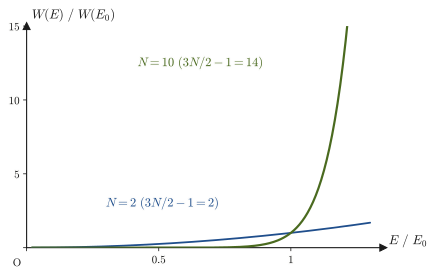
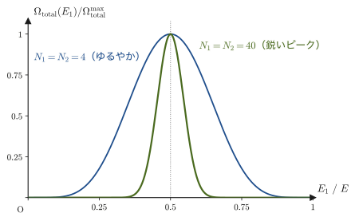
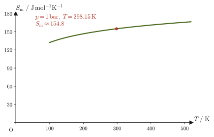
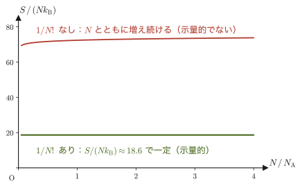
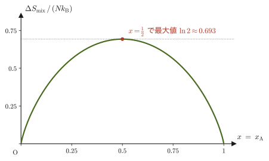
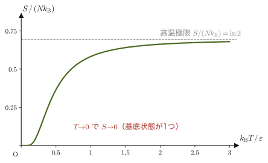

第49章熱力学的重率とボルツマンの原理
前章では，コインやサイコロの数え上げと同じ発想で，気体分子のような膨大な数の粒子からなる系の「微視的状態の数え方」——位相空間，エルゴード仮説，等重率の原理——という土台を作った．しかし，土台を作っただけでは，まだ何も「測れる量」にはたどり着いていない．圧力や温度のように実験室で測定できる量と，位相空間の中の状態の数とは，いったいどうつながっているのだろうか．
本章では，この問いに対するボルツマン（Boltzmann）の答え——微視的状態の数 $W$ の対数を取ると，熱力学のエントロピー $S$ に比例するという，統計力学で最も有名な関係式 $S=k_{\mathrm B}\ln W$——にたどり着く．単原子分子理想気体を具体例として，位相空間の体積を実際に計算し，そこから温度・エントロピーを導く．ウィーン中央墓地にあるボルツマンの墓には，この式が刻まれている．
導出の過程で，2つの系を接触させたときに何が起こるかを考えることで，温度とは何かを統計力学の言葉で定義しなおす．同じ発想を体積・粒子数についての偏微分に広げると，圧力や化学ポテンシャル（粒子を1個加えたときのエネルギーの変化を表す量）も $S$ から生まれることが分かる．
最後に，理想気体のエントロピーを具体的な式（ザックール＝テトローデの式）として書き下し，「同種の粒子を区別してはいけない」という一見些細な注意——ギブスのパラドックス——が，実は $S=k_{\mathrm B}\ln W$ の定義そのものに $1/N!$（$N$ の階乗の逆数）という因子を要求することを見る．また，第32章で学んだ熱力学第3法則（絶対零度でのエントロピー）が，ミクロな視点からはどう見えるかという問いにも答えを与える．
- 熱力学的重率 $\Omega(E),W(E)=\dd\Omega/\dd E$ を，単原子分子理想気体について位相空間の体積として実際に計算する
- ボルツマンの原理 $S=k_{\mathrm B}\ln W$ を，計算を1行も飛ばさずに導出し，統計力学的温度 $1/T=(\partial S/\partial E)_V$ にたどり着く
- エントロピーの示量性（加法性）と，$S=k_{\mathrm B}\ln\Omega(E)$ と $S=k_{\mathrm B}\ln[W(E)\Delta E]$ という2通りの定義が熱力学的極限で同じ結果を与えることを理解する
- 2つの系を熱的に接触させたときの「最も確からしい分配」から，温度の統計力学的定義を一般の系に広げ，圧力・化学ポテンシャルも $S$ の偏微分として統一的に理解する
- 理想気体のエントロピー（ザックール＝テトローデの式）を，第47章の $n$ 次元球の体積とスターリングの公式から導出する
- ギブスのパラドックスと $1/N!$ の必要性，混合エントロピーを理解し，熱力学第3法則（第32章）の統計力学的な意味を知る
もとにしたノート：望月泰英『物理学ノート 統計力学』 pp. 7–8．
復習：熱力学の関係と，ミクロ⇔マクロの対応表
本章から先は，第IV部（熱力学）で内部エネルギーを $U$ と書いていた量を，統計力学の慣習にしたがって $E$ と書く（同じ量である）．熱力学の関係と，本章で導く統計力学の対応物を一覧にしておく．以下の各節で，右の列の関係を1つずつ導く．
| 量・関係 | 熱力学（第IV部） | 統計力学（本章・次章） |
|---|---|---|
| 第1法則（可逆変化） | $\dd U=T\dd S-p\dd V\ (+\mu\dd N)$ | $\dd E=T\dd S-p\dd V+\mu\dd N$（$U\to E$） |
| エントロピー | $\dd S=\dd'Q/T$（第29章） | $S=k_{\mathrm B}\ln W$（49.2節） |
| 温度 | $\left(\pdiff{U}{S}\right)_V=T$ | $\dfrac1T=\left(\pdiff SE\right)_{V,N}$（49.4節） |
| 圧力 | $p=-\left(\pdiff UV\right)_S$ | $\dfrac pT=\left(\pdiff SV\right)_{E,N}$（49.5節） |
| 化学ポテンシャル | $\mu=\left(\pdiff UN\right)_{S,V}$ | $-\dfrac\mu T=\left(\pdiff SN\right)_{E,V}$（49.5節） |
| ヘルムホルツ自由エネルギー | $A=U-TS$（第30章） | $A=-k_{\mathrm B}T\ln Z$（次章，第50章） |
| 第3法則 | $T\to0$ で $S\to S_0$（第32章） | $S_0=k_{\mathrm B}\ln W_0$（49.8節） |
49.1 熱力学的重率 $\Omega(E)$ と $W(E)$ — 理想気体の位相空間体積
前章では，孤立した系の位相空間（第48章 48.2節）——1つの粒子の位置 $q$ と運動量 $p$ の組がつくる空間を，粒子の数だけ集めた空間——の中で，量子力学の不確定性原理により，1つの微視的状態は体積 $h^{3N}$（$h=6.626\,070\,15\times10^{-34}\ \mathrm{J\,s}$ はプランク定数（定義値）で，$q$ と $p$ の積の単位 $\mathrm{m\cdot kg\,m/s}=\mathrm{J\,s}$ と同じ単位をもつ．$N$ は粒子の数．気体分子1個につき位置3成分・運動量3成分の計6個の座標（自由度は3）をもつので，$N$ 個で $6N$ 次元の位相空間になる．位置空間・運動量空間はそれぞれ $3N$ 次元）の「セル」1つ分を占めることを学んだ．また，同じ種類の粒子を入れ替えただけの配置を別の微視的状態として重複して数えないために，数え上げた結果を $N!$（$N$ の階乗，$N$ 個の粒子を並べる順列の数）で割る約束も導入されている．第48章 48.6節で，その結果（公式48.3）と使い方を先に紹介した．本節では，その導出の各段階を一段ずつ丁寧に追って「エネルギーが $E$ 以下となる微視的状態の総数 $\Omega(E)$」の式を確かめ，さらに $E$ で微分して熱力学的重率 $W(E)$ を求める．$W(E)$ の $E$ への依存性（$E^{3N/2-1}$）が，次節以降の中心になる．
定義49.1 熱力学的重率 $\Omega(E)$，$W(E)$
孤立した熱力学的系について，第48章で導入した，エネルギーが $E$ 以下となる微視的状態の総数を $\Omega(E)$ とする．このとき，その $E$ による微分
\begin{equation} W(E)\equiv\diff{\Omega}{E} \label{eq:49-W-def} \end{equation}を，その系の熱力学的重率（thermodynamic weight）という．$W(E)$ は「エネルギー $E$ のごく近く，幅 $\dd E$ の範囲にどれだけの微視的状態が詰まっているか」を表す密度であり，$W(E)\,\Delta E$ は，エネルギーが $E$ から $E+\Delta E$ までの範囲（エネルギー殻，energy shell）に含まれる微視的状態の数を近似的に表す．
$\Omega(E)$ を求めるには，位相空間の中で「エネルギーが $E$ 以下」という条件を満たす領域の体積を，1つの微視的状態が占める体積 $h^{3N}$（および，同種粒子の重複を除く $N!$）で割ればよい．気体分子は $N$ 個あり，1個につき位置3成分 $(q_{3i-2},q_{3i-1},q_{3i})$ と運動量3成分 $(p_{3i-2},p_{3i-1},p_{3i})$（$i=1,\dots,N$）をもつので（1番目の分子なら $(q_1,q_2,q_3)$，2番目なら $(q_4,q_5,q_6)$，……，$N$ 番目なら $(q_{3N-2},q_{3N-1},q_{3N})$．運動量も同様），全体で $3N$ 個の位置座標 $q_1,\dots,q_{3N}$ と $3N$ 個の運動量座標 $p_1,\dots,p_{3N}$ がある．よって，
\begin{equation} \Omega(E)=\frac{1}{N!\,h^{3N}}\int\cdots\int\dd q_1\cdots\dd q_{3N}\,\dd p_1\cdots\dd p_{3N} \qquad\cdots\ \text{Ⓐ} \label{eq:49-omega-integral} \end{equation}という積分になる（積分範囲は「ハミルトニアン（力学的エネルギーの関数．第45章）が $E$ 以下」という条件を満たす領域）．位置座標の積分と運動量座標の積分は，被積分関数が定数（$1$）である限り互いに独立に実行できるので，式 \eqref{eq:49-omega-integral} は次のように位置空間の積分と運動量空間の積分の積に分けて書ける（図49.1）：
\begin{equation} \Omega(E)=\frac{1}{N!\,h^{3N}}\left(\int\cdots\int\dd q_1\cdots\dd q_{3N}\right)\left(\int\cdots\int\dd p_1\cdots\dd p_{3N}\right) \label{eq:49-omega-split} \end{equation}ここからは，この系を体積 $V$ の箱に閉じ込められた単原子分子理想気体（monatomic ideal gas）であるとする．「理想気体」なので分子どうしは力を及ぼし合わず（分子間力によるポテンシャルエネルギーは $0$），「単原子分子」なので1個の分子の力学的エネルギーは並進運動の運動エネルギーだけである．
導出：単原子分子理想気体の $\Omega(E)$ と $W(E)$
位置空間の積分（式Ⓑ） 分子は箱の中（体積 $V$）のどこにいてもよく，エネルギーには関係しない．分子1個の位置座標 $(q_1,q_2,q_3)$ についての積分 $\iiint\dd q_1\dd q_2\dd q_3$ は，箱の体積そのもの，つまり $V$ である．$N$ 個の分子はそれぞれ独立に箱の中のどこにいてもよいので，$3N$ 個の位置座標についての積分は，1個分の積分を $N$ 回かけ合わせたものになる：
\begin{equation} \int\cdots\int\dd q_1\cdots\dd q_{3N}=\left(\iiint\dd q_1\dd q_2\dd q_3\right)^{N}=V^{N} \qquad\cdots\ \text{Ⓑ} \label{eq:49-position-integral} \end{equation}運動量空間の積分（式Ⓒ） 単原子分子理想気体のハミルトニアン（力学的エネルギー，第45章で学んだ $H=T+U$）は，ポテンシャルエネルギー $U=0$ なので，運動エネルギーだけである：
$$ H=\sum_{i=1}^{3N}\frac{p_i^2}{2m}+0 $$（$m$ は分子1個の質量．和 $\sum_{i=1}^{3N}p_i^2$ は，$N$ 個の分子それぞれの運動量3成分の2乗和を全部たしたもの，つまり全分子の運動エネルギーの合計に $2m$ をかけたものになっている）．「エネルギーが $E$ 以下」という条件 $H\le E$ は，この式を使うと，
$$ \sum_{i=1}^{3N}p_i^2\le 2mE=\left(\sqrt{2mE}\right)^2 $$と書き直せる．これは，$3N$ 次元の運動量空間 $(p_1,\dots,p_{3N})$ の中で，原点からの距離（の2乗）が $2mE$ 以下，すなわち半径 $\sqrt{2mE}$ の $3N$ 次元球の内部（境界を含む）という条件にほかならない．したがって，運動量座標についての積分は，半径 $\sqrt{2mE}$ の $3N$ 次元球の体積そのものである．第47章で証明した $n$ 次元球の体積公式（第47章 47.1節，公式47.1）
$$ V_n(R)=\frac{\pi^{n/2}}{\Gamma\!\left(\dfrac{n}{2}+1\right)}R^{n}=\frac{\pi^{n/2}}{\left(\dfrac{n}{2}\right)\Gamma\!\left(\dfrac{n}{2}\right)}R^{n} $$（2つ目の等号は，ガンマ関数の漸化式 $\Gamma(z+1)=z\,\Gamma(z)$，大学数学 第32章 32.2節，を $z=n/2$ に使った．本節では分母を $\left(\frac n2\right)\Gamma\!\left(\frac n2\right)$ の形のまま使う．$\Gamma(z)$（ガンマ関数）は階乗を整数でない数にまで拡張した関数で，$\Gamma(n+1)=n!$，$\Gamma(\tfrac12)=\sqrt\pi$ である．漸化式より $\left(\frac n2\right)\Gamma\!\left(\frac n2\right)=\Gamma\!\left(\frac n2+1\right)$ なので，$n=3N$ では分母を $\left(\frac{3N}{2}\right)!$ と読めばよい．検算として $n=3$ とおくと，$\Gamma(\tfrac32)=\tfrac12\sqrt\pi$ より $V_3(R)=\pi^{3/2}R^3\big/\bigl(\tfrac32\cdot\tfrac12\sqrt\pi\bigr)=\tfrac43\pi R^3$ となり，おなじみの球の体積に一致する）に，$n=3N$（次元），$R=\sqrt{2mE}$（半径）を代入すると，
\begin{equation} \int\cdots\int\dd p_1\cdots\dd p_{3N}=\frac{\pi^{\frac{3N}{2}}}{\left(\dfrac{3N}{2}\right)\Gamma\!\left(\dfrac{3N}{2}\right)}\left(\sqrt{2mE}\right)^{3N} \qquad\cdots\ \text{Ⓒ} \label{eq:49-momentum-integral} \end{equation}が得られる．
$\Omega(E)$ の最終形 式Ⓑ，Ⓒを式 \eqref{eq:49-omega-split} に代入すると，
\begin{equation} \Omega(E)=\frac{1}{N!\,h^{3N}}\,V^{N}\cdot\frac{\pi^{\frac{3N}{2}}}{\left(\dfrac{3N}{2}\right)\Gamma\!\left(\dfrac{3N}{2}\right)}\,(2m)^{\frac{3N}{2}}\,E^{\frac{3N}{2}} \label{eq:49-omega-final} \end{equation}となる．$\Omega(E)$ が $E^{3N/2}$ に比例する（$3N$ 乗ではなく，その半分乗であることに注意）ことが分かった．
$W(E)=\dd\Omega/\dd E$ の計算 式 \eqref{eq:49-omega-final} の中で $E$ に依存するのは最後の $E^{3N/2}$ の部分だけであり，それ以外はすべて定数（$N,V,m,h$ で決まる，$E$ によらない量）である．べき関数の微分公式 $\dd(x^a)/\dd x=ax^{a-1}$（大学数学 第3章 3.3節で学んだ微分の基本公式そのもの）を使うと，
\begin{equation} W(E)=\diff{\Omega}{E}=\underbrace{\frac{3N}{2}\cdot\frac{1}{N!\,h^{3N}}\,V^{N}\cdot\frac{\pi^{\frac{3N}{2}}}{\left(\dfrac{3N}{2}\right)\Gamma\!\left(\dfrac{3N}{2}\right)}\,(2m)^{\frac{3N}{2}}}_{\text{定数}\ C_0}\cdot E^{\frac{3N}{2}-1}=C_0\,E^{\frac{3N}{2}-1} \label{eq:49-W-final} \end{equation}が得られる．係数の中の $\dfrac{3N}{2}$ と分母の $\left(\dfrac{3N}{2}\right)\Gamma\!\left(\dfrac{3N}{2}\right)$ は約分できて $\Gamma(3N/2)$ だけが残るので，$C_0=\dfrac{V^{N}}{N!\,h^{3N}}\cdot\dfrac{\pi^{3N/2}(2m)^{3N/2}}{\Gamma(3N/2)}$ とまとめてもよい．
（導出終わり）
公式49.1 単原子分子理想気体の熱力学的重率
体積 $V$ の箱に閉じ込められた，質量 $m$ の分子 $N$ 個からなる単原子分子理想気体について，エネルギー $E$ 以下の状態数と熱力学的重率は，
\begin{equation} \Omega(E)=\frac{V^{N}}{N!\,h^{3N}}\cdot\frac{\pi^{\frac{3N}{2}}}{\left(\dfrac{3N}{2}\right)\Gamma\!\left(\dfrac{3N}{2}\right)}\,(2mE)^{\frac{3N}{2}},\qquad W(E)=C_0\,E^{\frac{3N}{2}-1} \label{eq:49-formula-omega-w} \end{equation}で与えられる（$C_0$ は式 \eqref{eq:49-W-final} で定義された，$E$ によらない定数）．
注意：$1/N!$ を忘れると何が起こるか
式 \eqref{eq:49-omega-integral} の $1/N!$ を省略しても，ここまでの計算の形（$\Omega(E)\propto E^{3N/2}$，$W(E)\propto E^{3N/2-1}$）そのものは変わらない——$N!$ は $E$ に依存しない定数だからである．しかし，$1/N!$ を省略すると，のちに49.7節で見る「ギブスのパラドックス」という深刻な矛盾（同じ気体を混ぜても混ぜなくてもエントロピーが変わってしまうという，物理的にありえない結論）が生じる．なぜ $1/N!$ が必要なのかは，49.7節で具体的に確かめる．
例題49.1 $N=2$（$3N=6$ 次元）の場合に $\Omega(E)$ を実際に計算する
分子がわずか $N=2$ 個しかない（非現実的だが，公式 \eqref{eq:49-formula-omega-w} の中身を具体的に確かめるための）単原子分子理想気体を考え，$\Omega(E)$ を式 \eqref{eq:49-omega-split} から一段階ずつ計算せよ．
解答 $N=2$ なので，位置座標・運動量座標はそれぞれ $3N=6$ 個ある．
位置空間の積分 式 \eqref{eq:49-position-integral} より，$\displaystyle\int\cdots\int\dd q_1\cdots\dd q_6=V^2$．
運動量空間の積分 $n=3N=6$ 次元球の体積公式に $R=\sqrt{2mE}$ を代入する．$\Gamma(3)=2!=2$（大学数学 第32章 32.2節のガンマ関数の性質 $\Gamma(n+1)=n!$，$n=2$ の場合）なので，
$$ V_6(R)=\frac{\pi^{3}}{3\,\Gamma(3)}R^{6}=\frac{\pi^{3}}{3\times2}R^{6}=\frac{\pi^3}{6}R^6 $$（これは，高校数学までで馴染みのある「半径 $r$ の球の体積 $\frac43\pi r^3$」の6次元版であり，実際 $n=3$ を同じ公式に代入すると $V_3(R)=\pi^{3/2}R^3/(\frac32\Gamma(\frac32))=\frac43\pi R^3$ に一致する——通常の3次元の球の体積公式である）．$R=\sqrt{2mE}$ を代入すると，運動量空間の積分は $\dfrac{\pi^3}{6}(2mE)^3=\dfrac{8\pi^3 m^3E^3}{6}=\dfrac{4\pi^3m^3E^3}{3}$ となる．
まとめ 位置空間・運動量空間の積分をかけ合わせ，$N!=2!=2$ と $h^{3N}=h^6$ で割ると，
$$ \Omega(E)=\frac{1}{2!\,h^6}\times V^2\times\frac{4\pi^3m^3E^3}{3}=\frac{2\pi^3m^3V^2}{3h^6}E^3 $$公式 \eqref{eq:49-formula-omega-w} の一般形で $N=2$ とおいた場合（$\Omega(E)\propto E^{3N/2}=E^3$）と，指数がたしかに一致していることが確認できる．
例題49.2 $\Omega(E)$，$W(E)$ の次元（単位）の確認
式 \eqref{eq:49-omega-integral} の $\Omega(E)$ が無次元（単位をもたない，ただの数）であることを確かめ，それをもとに $W(E)=\dd\Omega/\dd E$ の次元がエネルギーの逆数であることを示せ．
解答 位置座標 $q_i$ の次元は長さ $[\mathrm{m}]$，運動量座標 $p_i$ の次元は $[\mathrm{kg\,m/s}]$ である．したがって $\dd q_i\,\dd p_i$ の次元は $[\mathrm{m}]\times[\mathrm{kg\,m/s}]=[\mathrm{kg\,m^2/s}]$ となり，これはプランク定数 $h$ の次元（作用の次元，$h=6.626\,070\,15\times10^{-34}\ \mathrm{J\,s}=6.626\,070\,15\times10^{-34}\ \mathrm{kg\,m^2/s}$）とちょうど一致する（この次元を作用（action）の次元という）．したがって $\dd q_i\,\dd p_i/h$ は無次元であり，これを $3N$ 個ぶんかけ合わせた $\Omega(E)$（$N!$ で割っても無次元性は変わらない）も無次元である．次元をもたない量 $\Omega$ をエネルギー $E$（次元 $[\mathrm{J}]$）で微分すると，商の次元の規則（大学数学 第1章 1.6節で学んだ微分の定義 $\dd f/\dd x=\lim_{\Delta x\to0}\Delta f/\Delta x$ から，$\dd f/\dd x$ の次元は「$f$ の次元」÷「$x$ の次元」）より，$W(E)=\dd\Omega/\dd E$ の次元は $[\text{無次元}]/[\mathrm J]=\mathrm{J^{-1}}$（エネルギーの逆数）になる．したがって，$W(E)\,\Delta E$（$\Delta E$ は $\mathrm J$ の次元）は無次元——たしかに「状態の個数」として意味のある量になっている．
49.2 ボルツマンの原理 $S=k_{\mathrm B}\ln W$
式 \eqref{eq:49-W-final} で求めた $W(E)=C_0E^{3N/2-1}$ は，$N$ が大きくなると信じがたい速さで増加する（図49.2）．$N=10$ 個という非現実的に小さい気体ですら，指数はすでに $14$ もある．実在の気体は $1\ \mathrm{mol}$ あたり $N\approx N_{\mathrm A}=6.02\times10^{23}$ 個の分子を含むので，指数 $3N/2-1$ は $9\times10^{23}$ 程度という，天文学的な大きさになる．このように途方もなく巨大な数をそのまま扱うのは実用的でないし，「エネルギーが少し変化したら状態数が何倍になったか」を測るには，かけ算・割り算よりも対数（足し算・引き算に直してくれる関数，高校数学 第6章）の方が扱いやすい．ボルツマンは，この巨大な状態数の対数こそが，熱力学のエントロピー $S$ の正体であることを見抜いた．
対数を使うもう1つの理由は，エントロピーが2つの系を合わせると足し算になる量であるのに対し，状態数は掛け算になる量だからである．掛け算を足し算に直す関数が対数であり，両者をつなぐ関数として対数がふさわしい（49.3.1節で確かめる）．また，孤立した系では，変化は状態数 $W$ が増える向きにしか進まない——これは，エントロピーが増える向きにしか進まない（エントロピー増大）という熱力学第2法則に対応している．

状態数を数える対象を，もう一度確認しておこう．興味があるのは，特定のエネルギー $E$ ちょうどの状態ではなく，実験で測定される「そのあたりのエネルギー」に対応する状態の集まりである．そこで，エネルギーが $E$ から $E+\Delta E$ までの範囲（エネルギー殻，図49.3）に入っている状態の数を考える．これは，定義49.1の $W(E)=\dd\Omega/\dd E$ を使って，近似的に $W(E)\,\Delta E$ と書ける．
法則49.1 ボルツマンの原理（Boltzmann's principle）
系のエネルギーが $[E,E+\Delta E]$ の範囲にあるときの状態数を $W\,(=W(E)\,\Delta E)$ とすると，その系のエントロピー $S$ は，
\begin{equation} S=k_{\mathrm B}\ln W \label{eq:49-boltzmann-principle} \end{equation}と表される．ここで $k_{\mathrm B}=1.380\,649\times10^{-23}\ \mathrm{J/K}$ はボルツマン定数（Boltzmann constant，SI2019の定義値）である．
この式が本当に成り立つことを，単原子分子理想気体について，前節の結果を使って確かめよう．
導出：$S=k_{\mathrm B}\ln W$（単原子分子理想気体の場合）
式 \eqref{eq:49-W-final} より，エネルギー殻の状態数は，
$$ W=W(E)\,\Delta E=\underbrace{C_0\,\Delta E}_{\text{定数}\ C}\,E^{\frac{3N}{2}-1} $$となる（$C_0$ も $\Delta E$ も $E$ に依存しないので，積 $C\equiv C_0\Delta E$ もまた $E$ によらない定数である）．この式の対数をとると，対数の性質 $\ln(xy)=\ln x+\ln y$，$\ln(x^a)=a\ln x$（高校数学 第6章）より，
$$ \ln W=\left(\frac{3N}{2}-1\right)\ln E+\ln C $$となる（$E$ は単位 $\mathrm J$ をもつので $\ln E$ の中身は無次元でないように見えるが，$C$ が $E^{3N/2-1}$ の単位を打ち消す単位をもつので，積 $W$ 全体は無次元である．基準エネルギー $E_0$ を使って $\ln(E/E_0)$ と読み替えても，$E$ での微分は同じ結果になる）．両辺を $E$ で微分すると，$\ln C$ は $E$ によらない定数なのでその微分は $0$ になり（微分の基本公式，大学数学 第3章 3.3節），
$$ \diff{}{E}(\ln W)=\diff{}{E}\left\{\left(\frac{3N}{2}-1\right)\ln E+\ln C\right\}=\left(\frac{3N}{2}-1\right)\frac1E $$ここで，$N$ は $1\ \mathrm{mol}$ あたり $N_{\mathrm A}\approx6\times10^{23}$ 個という膨大な数なので，$3N/2-1$ の中の $-1$ は $3N/2$（$\sim10^{23}$ のオーダー）に比べて $10^{-24}$ 程度でしかなく，無視してよい（例題49.3で数値を使って確認する）．したがって，
\begin{equation} \diff{}{E}(\ln W)=\left(\frac{3N}{2}-1\right)\frac1E\fallingdotseq\frac{3N}{2E} \qquad\cdots\ \text{Ⓔ} \label{eq:49-dlnW-dE} \end{equation}が得られる（$\fallingdotseq$ は「ほぼ等しい」の意味の記号）．
思い出す：統計力学的温度の定義
ここで登場する $E$ は，分子の運動エネルギーの合計であり，熱力学でいう内部エネルギーそのものである．単原子分子理想気体の内部エネルギーは，気体分子運動論とエネルギー等分配の法則（第24章 24.3節，法則24.2・公式24.2）からすでに，
$$ E=\frac32nRT=\frac32\underbrace{nN_{\mathrm A}}_{N}\cdot\underbrace{\frac{R}{N_{\mathrm A}}}_{k_{\mathrm B}}\cdot T=\frac32Nk_{\mathrm B}T \qquad\cdots\ \text{Ⓕ} $$であることが分かっている（$n$ はモル数，$R$ は気体定数，$N=nN_{\mathrm A}$ は分子の総数，$k_{\mathrm B}=R/N_{\mathrm A}$ はボルツマン定数）．この式は，見方を変えれば，「気体分子運動論によって定義された（高校物理以来おなじみの）絶対温度 $T$」が，統計力学の言葉でも意味をもつことを保証している——これが統計力学的温度（statistical temperature）の内容である．式Ⓕ $E=\frac32Nk_{\mathrm B}T$ は，統計力学における温度 $T$ の定義式でもある．$T$ はこの関係で内部エネルギーと結びつけられた量であり，次のⒼとⒽの比較の出発点になる（一般の系での定義は49.4節の定義49.2）．
式Ⓕを式 \eqref{eq:49-dlnW-dE}（式Ⓔ）に代入すると，
$$ \diff{}{E}(\ln W)=\frac{3N}{2E}=\frac{3N}{2\times\frac32Nk_{\mathrm B}T}=\frac{1}{k_{\mathrm B}T} $$となる．両辺に $k_{\mathrm B}$（定数）をかけると，
\begin{equation} \diff{}{E}(k_{\mathrm B}\ln W)=\frac{1}{T} \qquad\cdots\ \text{Ⓖ} \label{eq:49-dklnW-dE} \end{equation}が得られる．ここで，熱力学第1法則（可逆変化，体積一定なら仕事はゼロ．第29章）$\dd E=T\dd S-p\dd V$ を思い出そう．体積 $V$ を一定に保ったまま $E$（したがって $S$）だけを変化させる場合，$\dd V=0$ なので $\dd E=T\dd S$，すなわち
$$ \left(\pdiff{E}{S}\right)_V=T $$となる．偏微分の記号 $(\cdot)_V$ は「$V$ を一定に保ったまま」という意味である（大学数学 第6章 6.2節）．逆関数の微分の関係（$\dd y/\dd x=1/(\dd x/\dd y)$ が偏微分でも成り立つ，同じく6.2節）を使ってこれを書き直すと，
\begin{equation} \left(\pdiff{S}{E}\right)_V=\frac1T \qquad\cdots\ \text{Ⓗ} \label{eq:49-dSdE} \end{equation}が得られる．式Ⓖと式Ⓗを見比べると，どちらも「$E$ で微分すると $1/T$ になる」という同じ性質をもつ量——$k_{\mathrm B}\ln W$ と $S$——について述べていることが分かる．このことから $S=k_{\mathrm B}\ln W$ であると結論できる．もう少し慎重に，次の4段階に分けて確かめておこう．
- $E$ 依存性：$E$ について微分した結果が（同じ体積・粒子数のもとで）常に一致するのだから，両者の差 $S-k_{\mathrm B}\ln W$ は $E$ に依存せず，$V$ と $N$ だけで決まる量になる．
- $V$ 依存性：$W\propto V^N$ から $\partial(k_{\mathrm B}\ln W)/\partial V=Nk_{\mathrm B}/V$ であり，これは理想気体の状態方程式 $pV=Nk_{\mathrm B}T$（第23章）から得られる $p/T=Nk_{\mathrm B}/V$（$=\partial S/\partial V$，49.5節）と一致する（例題49.7で，この関係を逆向きにたどる）．したがって差は $V$ にも依存せず，粒子数 $N$ だけの関数になる．
- 残る定数：熱力学だけでは，エントロピーは定数を除いてしか決まらない（第29章 29.2節の積分定数 $\alpha_0$）．そこで，最後に残った「$N$ だけの関数」を $0$ とおく．つまり，定数の違いを残さずに
- この選び方の確認：こう選んでよいことは，本章の後の議論——独立な系のエントロピーが足し算になること（49.3節），ザックール＝テトローデの式が実験値を再現すること（例題49.8），絶対零度でエントロピーが $0$ になること（49.8節）——で確かめられる．
以上により，$E$ 依存性（温度の定義）と $V$ 依存性（状態方程式）については，ボルツマンの原理が単原子分子理想気体で熱力学と完全に一致することが確かめられた．これが法則49.1（ボルツマンの原理）の主張である．
（導出終わり）
イメージ：ここまでの流れ
ここまでの道筋を4段階にまとめておく．「ミクロな状態を数える」ことから，「エントロピー」というマクロな量が現れる——これが統計力学の基本思想である．
- 位相空間で状態を数える：位置の積分 $V^N$ と運動量の積分（$3N$ 次元球）から $\Omega(E)$，$W(E)$ を求める（49.1節）．
- 対数をとって $E$ で微分する：$\dd(\ln W)/\dd E\fallingdotseq3N/(2E)$．
- 熱力学と比べる：$E=\frac32Nk_{\mathrm B}T$ を使うと $\dd(k_{\mathrm B}\ln W)/\dd E=1/T$ となり，熱力学の $(\partial S/\partial E)_V=1/T$ と同じ形になる．
- 結論：$S=k_{\mathrm B}\ln W$．ミクロな状態数（$W$）とマクロなエントロピー（$S$）が結びつく．
ボルツマンの原理 $S=k_{\mathrm B}\ln W$ は，ミクロな量（位相空間の中で数えた状態の個数 $W$）と，マクロな量（熱力学第2法則から導入されたエントロピー $S$）とを結びつける，統計力学で最も重要な式である．ここでは単原子分子理想気体について具体的に確かめたが，マックス・プランク（Max Planck）は，この関係が理想気体に限らず，あらゆる熱力学的系に対して成り立つ普遍的な原理であることを指摘した．以後，本書では式 \eqref{eq:49-boltzmann-principle} を，理想気体に限らない一般の系についての基本原理として使う．
例題49.3 「$-1$ を無視する」近似の妥当性
$N=N_{\mathrm A}\approx6.022\times10^{23}$ のとき，$3N/2-1$ と $3N/2$ の相対誤差 $\left|\dfrac{(3N/2)-(3N/2-1)}{3N/2-1}\right|$ を求め，式 \eqref{eq:49-dlnW-dE} で $-1$ を無視した近似がどれほど正当化されるか評価せよ．
解答 相対誤差は $\dfrac{1}{3N/2-1}\fallingdotseq\dfrac{2}{3N}$ である．$N=N_{\mathrm A}\approx6.022\times10^{23}$ を代入すると，
$$ \frac{2}{3N_{\mathrm A}}\approx\frac{2}{3\times6.022\times10^{23}}\approx1.11\times10^{-24} $$となる．これは，24桁目まで一致していることを意味する，実用上まったく問題にならないほど小さい誤差である．一般に，統計力学では「$N$ が大きいことを使って，$N$ に対して定数程度の項（$-1$ や $+2$ など）を無視する」という近似が随所に現れるが，$N\sim10^{23}$ という桁違いの大きさのおかげで，こうした近似はほとんど常に正当化される．
例題49.4 $W$ が2倍になったときのエントロピー変化
ある系の状態数 $W$ が，何らかの変化によってちょうど2倍になったとする．このときのエントロピー変化 $\Delta S$ を求め，数値を計算せよ．
解答 法則49.1 $S=k_{\mathrm B}\ln W$ より，状態数が $W\to2W$ と変化したときのエントロピー変化は，
$$ \Delta S=k_{\mathrm B}\ln(2W)-k_{\mathrm B}\ln W=k_{\mathrm B}\ln\frac{2W}{W}=k_{\mathrm B}\ln2 $$となる（対数の性質 $\ln(2W)-\ln W=\ln(2W/W)=\ln2$ を使った．$W$ そのものの大きさにはよらないことに注意）．数値を代入すると，
$$ \Delta S=k_{\mathrm B}\ln2=1.380\,649\times10^{-23}\times0.6931\approx9.57\times10^{-24}\ \mathrm{J/K} $$となる．「状態数が2倍になる」という，ミクロには単純な変化が，マクロには $k_{\mathrm B}\ln2$ という決まった量だけエントロピーを増やすことに対応している——これが「情報量1ビット」の物理的な意味（1つの2択の不確かさが解消される，あるいは逆に生まれることに対応するエントロピー）としてもしばしば引用される，有名な数値である．
ボルツマンの原理 $S=k_{\mathrm B}\ln W$ は，統計力学という分野の性格を象徴する式として広く知られている．オーストリアのウィーン中央墓地（Wiener Zentralfriedhof）にあるボルツマンの墓には，彼の胸像の下の台座に，この式が
$$ S=k_{\mathrm B}\cdot\log W $$という形で刻まれている（$\log$ は自然対数 $\ln$ の意味で使われている．本書の $\ln$ と同じもの．また，$W$ はドイツ語の確率 Wahrscheinlichkeit の頭文字とされる）．ボルツマン自身は1870年代に，エントロピーが状態の数（の対数）と結びついていることを示した．等号で結ばれた $S=k_{\mathrm B}\ln W$ の形と定数 $k_{\mathrm B}$ を最初に書き下したのは，黒体放射の研究（1900年ごろ）をしていたプランクだとされる．胸像をそなえたこの墓碑は，ボルツマンの死後（1906年没）の1930年代に建てられたと伝えられている．「エントロピーとは，ミクロな状態の数の対数である」という洞察は，ボルツマンの統計力学における最大の貢献であり，この式が彼の墓碑を飾っているのはまことにふさわしい．
49.3 エントロピーの一般的な性質 — 示量性と2つの定義の同値性
ボルツマンの原理 $S=k_{\mathrm B}\ln W$ が使えるようになったので，これを使ってエントロピーの一般的な性質を2つ確認しておこう．1つ目は，複数の系を組み合わせたときにエントロピーがどう振る舞うかという加法性（示量性）であり，2つ目は，本章でここまで使ってきた「エネルギー殻の状態数 $W(E)\Delta E$」と，49.1節で最初に定義した「累積の状態数 $\Omega(E)$」のどちらを $S=k_{\mathrm B}\ln(\cdot)$ に代入しても同じ結果になるという，定義の同値性である．
49.3.1 エントロピーの示量性と加法性
互いにまったく無関係な（力を及ぼし合わない，エネルギーのやりとりもしない）2つの系1，2を考える．系1の微視的状態が $\Omega_1$ 通り，系2の微視的状態が $\Omega_2$ 通りあるとしよう．この2つの系をあわせて「系1＋系2」という1つの複合系とみなすと，複合系の微視的状態は何通りあるだろうか（図49.4）．（ここでは状態数を $\Omega$ と書いているが，$\Omega$ を使ってよい理由——エネルギー殻の状態数 $W\Delta E$ を使っても同じ結果になること——は次の49.3.2節で確かめる．）
イメージ：なぜ状態数は積になるのか
系1の状態を1つ選ぶ方法が $\Omega_1$ 通りあり，そのどれを選んでも，系2の状態を選ぶ方法が独立に $\Omega_2$ 通りある．これは，高校数学の「場合の数」で学んだ積の法則そのもの（独立な試行の確率が積になること，大学数学 第13章 13.5節，や，第48章のコイン投げの数え方と同じ考え方）である——たとえば，系1の状態が「$A$ か $B$ か」の2通り，系2の状態が「$1,2,3$」の3通りなら，複合系の状態は $(A,1),(A,2),(A,3),(B,1),(B,2),(B,3)$ の$2\times3=6$通りになる．一般に，独立などうしを組み合わせるときは，状態数はかけ算になる．
定理49.1 エントロピーの加法性（示量性）
互いに独立な（エネルギー・物質のやりとりをしない）2つの系1，2を組み合わせた複合系の微視的状態の総数は，
\begin{equation} \Omega_{1+2}=\Omega_1\,\Omega_2 \label{eq:49-omega-product} \end{equation}で与えられる．ボルツマンの原理（法則49.1）をこの複合系に適用すると，複合系のエントロピー $S_{1+2}$ は，
\begin{equation} S_{1+2}=S_1+S_2 \label{eq:49-entropy-additive} \end{equation}を満たす．すなわち，エントロピーは示量変数（extensive variable，系の大きさに比例して増える量．圧力・温度のような示強変数（intensive variable，系の大きさによらない量）とは対照的）である．
導出：$S_{1+2}=S_1+S_2$
ボルツマンの原理を複合系に適用し，式 \eqref{eq:49-omega-product} を代入すると，
$$ S_{1+2}=k_{\mathrm B}\ln\Omega_{1+2}=k_{\mathrm B}\ln(\Omega_1\Omega_2) $$となる．対数の性質 $\ln(xy)=\ln x+\ln y$（高校数学 第6章）より，
$$ S_{1+2}=k_{\mathrm B}\left(\ln\Omega_1+\ln\Omega_2\right)=k_{\mathrm B}\ln\Omega_1+k_{\mathrm B}\ln\Omega_2=S_1+S_2 $$が得られる．
（導出終わり）
注意：加法性と示量性は別の要請
定理49.1が示したのは，独立な（無関係な）2つの系のエントロピーが足し算になること（加法性）である．「同じ系をそっくり2倍にしたとき $S(2E,2V,2N)=2S(E,V,N)$ となる」という示量性は，これとは別の，より強い要請であり，同種粒子の数え方（$1/N!$）を正しく入れないと破れてしまう（49.7節）．
例題49.5 加法性の数値確認
系1の状態数が $\Omega_1=10^{10}$，系2の状態数が $\Omega_2=10^{20}$ であるとき，それぞれのエントロピー $S_1,S_2$ と，複合系のエントロピー $S_{1+2}$ を求め，$S_{1+2}=S_1+S_2$ が成り立つことを確認せよ．
解答 法則49.1より，
$$ S_1=k_{\mathrm B}\ln(10^{10})=10k_{\mathrm B}\ln10,\qquad S_2=k_{\mathrm B}\ln(10^{20})=20k_{\mathrm B}\ln10 $$$k_{\mathrm B}=1.380\,649\times10^{-23}\ \mathrm{J/K}$，$\ln10\approx2.3026$ を使うと，
$$ S_1\approx3.179\times10^{-22}\ \mathrm{J/K},\qquad S_2\approx6.358\times10^{-22}\ \mathrm{J/K} $$複合系の状態数は $\Omega_{1+2}=\Omega_1\Omega_2=10^{10}\times10^{20}=10^{30}$ なので，
$$ S_{1+2}=k_{\mathrm B}\ln(10^{30})=30k_{\mathrm B}\ln10\approx9.537\times10^{-22}\ \mathrm{J/K} $$一方，$S_1+S_2\approx(3.179+6.358)\times10^{-22}=9.537\times10^{-22}\ \mathrm{J/K}$ であり，たしかに $S_{1+2}=S_1+S_2$ が成り立っている．
49.3.2 $S=k_{\mathrm B}\ln\Omega(E)$ と $S=k_{\mathrm B}\ln[W(E)\Delta E]$ の同値性
49.2節では，エネルギー殻 $[E,E+\Delta E]$ の状態数 $W(E)\Delta E$ を使って $S=k_{\mathrm B}\ln[W(E)\Delta E]$ とした．しかし，49.1節で最初に定義した $\Omega(E)$（エネルギー $E$ 以下のすべての状態数）を直接使って $S=k_{\mathrm B}\ln\Omega(E)$ としても，同じ結果になるのだろうか．幅 $\Delta E$ の選び方には特に決まった基準がなく（幅 $\Delta E$ の値そのものにはあまり意味がない），$\Delta E$ を変えれば $\ln[W(E)\Delta E]$ の値も変わってしまうように見えるので，これは気になる問題である．
導出：2つの定義の差は熱力学的極限で無視できる
単原子分子理想気体では，式 \eqref{eq:49-omega-final} より $\Omega(E)\propto E^{3N/2}$ である．したがって，$W(E)=\dd\Omega/\dd E=(3N/2)\,\Omega(E)/E$（べき関数の微分）が成り立ち，これを使うと，
$$ \frac{\Omega(E)}{W(E)\,\Delta E}=\frac{\Omega(E)}{\dfrac{3N}{2E}\Omega(E)\,\Delta E}=\frac{2E}{3N\,\Delta E} $$となる．両辺の対数をとると，
\begin{equation} \ln\Omega(E)-\ln\bigl[W(E)\,\Delta E\bigr]=\ln\left(\frac{2E}{3N\,\Delta E}\right) \label{eq:49-omega-vs-wde} \end{equation}が得られる．右辺は，$\Delta E$ が $E$ と同じ桁（あるいはせいぜい $E/\sqrt N$ 程度——後の章で見る，統計力学的なゆらぎの典型的な大きさ）である限り，$N$ が大きくなっても高々 $\ln N$ のオーダーでしか大きくならない（対数関数は引数がどれだけ大きくなっても非常にゆっくりとしか増加しない）．これに対し，$\ln\Omega(E)$ 自身は，式 \eqref{eq:49-omega-final} から $\ln\Omega(E)\sim\dfrac{3N}{2}\ln E$ という形で，$N$ に比例して大きくなる．$N\sim N_{\mathrm A}\sim10^{23}$ 程度では，$\ln N\sim54$ 程度でしかないのに対し $N$ そのものは $10^{23}$ のオーダーなので，式 \eqref{eq:49-omega-vs-wde} の右辺は，$S/k_{\mathrm B}$ 本体の大きさに比べて，比率にして $10^{-22}$ 程度（$\ln N/N\approx9\times10^{-23}$）でしかない，まったく無視できる補正である．たとえば $N=N_{\mathrm A}$，$\Delta E\sim E$ なら右辺は $\ln\{2/(3N_{\mathrm A})\}\approx-55$ であるのに対し，$S/k_{\mathrm B}$ は $10^{25}$ 程度（アルゴン $1\ \mathrm{mol}$ で約 $1.1\times10^{25}$，例題49.8）なので，補正は $10^{-23}$ より小さい．したがって，熱力学的極限（$N\to\infty$）では，
$$ k_{\mathrm B}\ln\Omega(E)\ \fallingdotseq\ k_{\mathrm B}\ln\bigl[W(E)\,\Delta E\bigr] $$であり，$S=k_{\mathrm B}\ln\Omega(E)$ と $S=k_{\mathrm B}\ln[W(E)\Delta E]$ は，マクロな系について実質的に同じ結果を与える．どちらの定義を使ってもよく，本章では以降，計算しやすい方（多くの場合 $\Omega(E)$ そのもの）を使う．
（導出終わり）
イメージ：なぜ「幅 $\Delta E$ はあまり意味がない」のか
$\Delta E$ をどう選ぶか（気体の温度でゆらぐ程度の幅にするか，もっと狭くするか）には特に厳密な決まりがない．しかし，たった今見たとおり，$\Delta E$ の選び方を変える効果は $\ln(\Delta E)$ という対数の中に押し込められてしまい，その大きさは $N$ に比例して増える $S/k_{\mathrm B}$ 本体（$\sim N\ln E$）に比べれば，$N\to\infty$ の極限で比率がゼロに近づいていく，無視できる補正でしかない．「巨大な数の対数を考えると，多少の数え方の違い（何を1つの状態の単位とみなすか）は最終的な結果にほとんど影響しない」というこの性質は，統計力学のいたるところで顔を出す，熱力学的極限の威力の一例である．
49.4 熱的接触と最も確からしい分配 — 温度の統計力学的定義
49.2節では，単原子分子理想気体という具体的な系について，$(\partial S/\partial E)_V=1/T$ という関係が成り立つことを（気体分子運動論からすでに分かっている $E=\frac32Nk_{\mathrm B}T$ を経由して）確かめた．しかし，この関係は理想気体に限らず，およそ「温度」という概念が意味をもつあらゆる系について成り立つはずである．本節では，2つの系を熱的に接触させる（エネルギーだけをやりとりできる状態にする）という，より直接的な思考実験から，温度を統計力学の言葉だけで——理想気体の内部エネルギーの式を借りずに——定義しなおす．
系1（エネルギー $E_1$，状態数 $\Omega_1(E_1)$）と系2（エネルギー $E_2$，状態数 $\Omega_2(E_2)$）が，熱を通す（が物質は通さない，動きもしない）壁で接触しているとする．全体は孤立系であり，全エネルギー $E=E_1+E_2$ は一定に保たれるが，$E_1,E_2$ 個々の値は，熱のやりとりによって時間とともに変化しうる．エネルギー $E_1$（したがって $E_2=E-E_1$ も）を指定したときの複合系の状態数は，49.3節の加法性の議論（ただし今回は「たしたら一定」という拘束条件があるので，かけ算の相手が $E_1$ の関数になる）と同じ発想で，
\begin{equation} \Omega_{\mathrm{total}}(E_1)=\Omega_1(E_1)\,\Omega_2(E-E_1) \label{eq:49-omega-total-thermal} \end{equation}と書ける（$E_1$ の値ごとに，系1・系2それぞれの微視的状態の組み合わせ方が $\Omega_1(E_1)\Omega_2(E-E_1)$ 通りある）．ただし正確には，ここでの $\Omega_i(E_i)$ は，エネルギーが $E_i$ のごく近く（幅 $\Delta E$ の殻）にある状態の数 $W_i(E_i)\Delta E$ を表し，$\Omega_{\mathrm{total}}(E_1)=W_1(E_1)\Delta E\cdot W_2(E-E_1)\Delta E$ である．「$E_i$ 以下」の累積の状態数 $\Omega_i$ で代用しても，49.3.2節で見たとおり $\ln$ の差は $\ln N$ 程度でしかなく，$S/k_{\mathrm B}\sim N$ に比べて無視できるので，最大になる位置は変わらない．以下では $\Omega_i$ と書く．全系（系1＋系2）そのものの状態数は，起こりうる $E_1$ のすべての値について式 \eqref{eq:49-omega-total-thermal} を足し合わせたものになるが，第48章で見た「圧倒的多数の微視的状態がどの巨視的状態に集中しているか」という考え方（コイン100枚で「表50枚」が他のどの枚数よりも圧倒的に多いのと同じ理由）により，この和は，$\Omega_{\mathrm{total}}(E_1)$ を最大にする1つの値 $E_1=E_1^*$ のまわりのごくわずかな範囲からの寄与が，他のほぼすべての寄与を圧倒的にしのぐ（図49.5）．

そこで，「複合系がどんな $E_1$ を実現するか」という問いは，「$\Omega_{\mathrm{total}}(E_1)$（したがって $\ln\Omega_{\mathrm{total}}(E_1)$，対数は単調増加関数なので最大値を与える $E_1$ は同じ）を最大にする $E_1$ はいくつか」という，微分で解ける問題に帰着する．
導出：最も確からしい分配と温度の一致
式 \eqref{eq:49-omega-total-thermal} の対数をとると，
$$ \ln\Omega_{\mathrm{total}}(E_1)=\ln\Omega_1(E_1)+\ln\Omega_2(E-E_1) $$となる．これを $E_1$ で微分して $0$ とおく（極値の条件，大学数学 第4章 4.5節の極値の判定法）．右辺第1項は $E_1$ の関数をそのまま微分すればよいが，第2項は合成関数 $E_2=E-E_1$ を通じて $E_1$ に依存しているので，合成関数の微分（連鎖律，大学数学 第6章 6.4節）が必要である．$\dd E_2/\dd E_1=-1$ に注意する．なお，$\Omega_1$ は本来 $E_1$ のほか $V_1$，$N_1$ の関数（$\Omega_2$ も同様）だが，今は $V_1,N_1$（$V_2,N_2$）を一定に保つので，偏微分の記号 $\partial$ で書いた．すると，
$$ \diff{}{E_1}\Bigl[\ln\Omega_1(E_1)+\ln\Omega_2(E-E_1)\Bigr] =\left(\pdiff{\ln\Omega_1}{E_1}\right)+\left(\pdiff{\ln\Omega_2}{E_2}\right)\cdot\underbrace{\diff{E_2}{E_1}}_{-1} =\pdiff{\ln\Omega_1}{E_1}-\pdiff{\ln\Omega_2}{E_2} $$となる．これを $0$ とおくと，最も確からしい分配 $E_1=E_1^*$（$E_2^*=E-E_1^*$）では，
\begin{equation} \left(\pdiff{\ln\Omega_1}{E_1}\right)_{E_1^*}=\left(\pdiff{\ln\Omega_2}{E_2}\right)_{E_2^*} \label{eq:49-equilibrium-condition} \end{equation}が成り立つ（これが極大であるためには，2階微分 $\partial^2\ln\Omega_1/\partial E_1^2+\partial^2\ln\Omega_2/\partial E_2^2$ が負であることも必要である．単原子分子理想気体では $\ln\Omega_i=\frac{3N_i}{2}\ln E_i+(\text{定数})$ なので $\partial^2\ln\Omega_i/\partial E_i^2=-3N_i/(2E_i^2)\lt0$ となり，これは確かに満たされている（例題49.6）．一般の系でも，$\partial^2S/\partial E^2=\partial(1/T)/\partial E=-1/(T^2C_V)$ なので，熱容量が正（$C_V\gt0$，第31章 31.8節の熱的安定性）でありさえすれば負になる）．ここで，ボルツマンの原理 $S=k_{\mathrm B}\ln\Omega$（49.3節で確かめた，$\Omega(E)$ を直接使う形）の両辺を $k_{\mathrm B}$ で割ると $\ln\Omega=S/k_{\mathrm B}$ であり，式 \eqref{eq:49-equilibrium-condition} の両辺に $k_{\mathrm B}$ をかけると，
$$ \left(\pdiff{S_1}{E_1}\right)_{E_1^*}=\left(\pdiff{S_2}{E_2}\right)_{E_2^*} $$となる．49.2節の式 \eqref{eq:49-dSdE}（単原子分子理想気体について確かめた関係，ここでは一般の系に成り立つと仮定して使う）$(\partial S/\partial E)_V=1/T$ を，系1・系2それぞれに当てはめると，最も確からしい分配では，
\begin{equation} \frac{1}{T_1}=\frac{1}{T_2}\qquad\text{すなわち}\qquad T_1=T_2 \label{eq:49-thermal-equilibrium} \end{equation}が成り立つ．
（導出終わり）
式 \eqref{eq:49-thermal-equilibrium} は，高校物理でおなじみの事実——「熱を通す壁で接触した2つの物体は，最終的に同じ温度になる（熱平衡）」——を，ミクロな状態の数え上げから導いたものである．しかも，この議論は理想気体に限らず，$\Omega(E)$（状態数がエネルギーとともにどう増えるか）さえ分かっていれば，どんな系にも通用する．そこで，$(\partial S/\partial E)_V$ という量そのものを，理想気体の公式を経由せずに，温度の定義として採用しよう．
定義49.2 温度の統計力学的定義
体積 $V$（および粒子数 $N$）を一定に保ったときの，エントロピー $S$ のエネルギー $E$ による偏微分の逆数を，その系の（絶対）温度 $T$ と定義する：
\begin{equation} \frac1T\equiv\left(\pdiff{S}{E}\right)_{V,N} \label{eq:49-temperature-def} \end{equation}この定義のもとでは，直前の導出で示したとおり，熱を通す壁で接触した2つの系は，最も実現されやすい（圧倒的多数の微視的状態がそこに集中する）分配において自動的に同じ温度になる．これは，高校物理で「物体どうしが熱平衡に達すると同じ温度になる」と習った事実の，統計力学による説明である．
イメージ：なぜ「最も確からしい分配」が「必ず実現する」とみなせるのか
図49.5で見たとおり，系が大きくなるほど，$\Omega_{\mathrm{total}}(E_1)$ のグラフは $E_1=E_1^*$ のまわりにますます鋭く尖っていく．$N\sim10^{23}$ 個の分子からなる実在の気体では，このピークの幅は（相対的に）$1/\sqrt N\sim10^{-12}$ 程度というけた違いに狭いものになることが知られている（この「ゆらぎ」の大きさは第50章で定量的に扱う）．つまり，$E_1$ が $E_1^*$ から少しでもずれた状態は，実現する微視的状態の数のうえで，ほとんど無視できるほど少数派になる．したがって，「複合系はほぼ確実に $E_1\approx E_1^*$ を実現する」と言い切ってしまってよい——これが，統計力学における「最も確からしい分配は，事実上唯一実現される分配である」という考え方の中身である．
例題49.6 2つの理想気体の熱平衡
単原子分子理想気体からなる系1（分子数 $N_1$）と系2（分子数 $N_2$）が，全エネルギー $E=E_1+E_2$ を一定に保ったまま熱的に接触している．式 \eqref{eq:49-omega-total-thermal} を最大にする $E_1^*$ を，$\Omega_i(E_i)\propto E_i^{3N_i/2}$（$i=1,2$，49.1節の結果）を使って直接求め，これが式 \eqref{eq:49-thermal-equilibrium}（$T_1=T_2$）と矛盾しないことを確認せよ．
解答 $\Omega_{\mathrm{total}}(E_1)\propto E_1^{3N_1/2}(E-E_1)^{3N_2/2}$ の対数をとると，
$$ \ln\Omega_{\mathrm{total}}(E_1)=\frac{3N_1}{2}\ln E_1+\frac{3N_2}{2}\ln(E-E_1)+\text{定数} $$これを $E_1$ で微分して $0$ とおくと，
$$ \frac{3N_1}{2E_1}-\frac{3N_2}{2(E-E_1)}=0\quad\Longrightarrow\quad \frac{N_1}{E_1}=\frac{N_2}{E-E_1} $$これを $E_1$ について解くと，$N_1(E-E_1)=N_2E_1$，すなわち $N_1E=(N_1+N_2)E_1$ より，
$$ E_1^*=\frac{N_1}{N_1+N_2}E,\qquad E_2^*=E-E_1^*=\frac{N_2}{N_1+N_2}E $$が得られる．つまり，エネルギーは分子数 $N_1,N_2$ に比例する形で配分される：$E_1^*/N_1=E_2^*/N_2=E/(N_1+N_2)$．単原子分子理想気体では $E_i=\frac32N_ik_{\mathrm B}T_i$ なので，$E_i^*/N_i=\frac32k_{\mathrm B}T_i^*$ となり，$E_1^*/N_1=E_2^*/N_2$ はちょうど $T_1^*=T_2^*$ を意味する——式 \eqref{eq:49-thermal-equilibrium} と完全に一致する．
49.5 圧力・化学ポテンシャルとエントロピーの偏微分
定義49.2では，温度の逆数 $1/T$ が，エントロピー $S$ をエネルギー $E$ で偏微分したものであることを見た．熱力学第1法則 $\dd E=T\dd S-p\dd V$（第29章，体積が変化できる閉じた系の場合）をエントロピー $S$ について解くと，
\begin{equation} \dd S=\frac1T\dd E+\frac{p}{T}\dd V \label{eq:49-dS-general} \end{equation}となる．全微分の考え方（大学数学 第6章 6.3節）にしたがえば，$S(E,V)$ の全微分は $\dd S=(\partial S/\partial E)_V\dd E+(\partial S/\partial V)_E\dd V$ と書けるはずなので，式 \eqref{eq:49-dS-general} と係数を見比べると，$1/T=(\partial S/\partial E)_V$（定義49.2，すでに得た関係）に加えて，
$$ \left(\pdiff{S}{V}\right)_E=\frac pT $$という，もう1つの偏微分の関係が得られる．さらに，分子の出入りがある開いた系（第26章 26.7節）まで視野を広げると，熱力学第1法則には化学ポテンシャル $\mu$ の項が加わる（第26章ではモル数 $n$ を使ったが，統計力学では粒子の個数 $N$ を直接使うのが自然なので，$n\to N$，$\mu$ は「粒子1個を系に加えたときに内部エネルギーがどれだけ増えるか」を表す量として読み替える）：
$$ \dd E=T\dd S-p\dd V+\mu\,\dd N $$これをエントロピーについて解くと，
\begin{equation} \dd S=\frac1T\dd E+\frac pT\dd V-\frac\mu T\dd N \label{eq:49-dS-full} \end{equation}となる．$S(E,V,N)$ の全微分の係数を比較すると，次の3つの偏微分の関係にまとめられる．
定義49.3 圧力・化学ポテンシャルのエントロピーによる定義
エントロピー $S(E,V,N)$ の偏微分として，温度・圧力・化学ポテンシャルは次のように定義される：
\begin{equation} \frac1T=\left(\pdiff{S}{E}\right)_{V,N},\qquad \frac pT=\left(\pdiff{S}{V}\right)_{E,N},\qquad -\frac\mu T=\left(\pdiff{S}{N}\right)_{E,V} \label{eq:49-three-partials} \end{equation}いずれも，「他の2つの変数を固定して，残り1つの変数を増やしたときに，エントロピー（＝状態数の対数）がどれだけ増えるか」を表している．温度はエネルギーを増やしたときの，圧力は体積を増やしたときの，化学ポテンシャル（の符号を変えたもの）は粒子数を増やしたときの，エントロピーの増え方（の逆数や比）にほかならない．
イメージ：3つの偏微分が意味すること
温度・圧力・化学ポテンシャルは，見た目にはまったく異なる物理量（それぞれ熱・力・化学反応にかかわる）だが，統計力学の目で見ると，どれも「エントロピー（状態数の対数）が，あるものを1つ増やしたときにどれだけ増えるか」という，同じ種類の量である——これが，式 \eqref{eq:49-three-partials} が伝えているメッセージである．たとえば，熱も通す動く仕切り（分子は通さない）で接した2つの系を考えると，49.4節とまったく同じ議論（全体の状態数を最大にする $E_1$ と $V_1$ を求める）を体積についてもくり返すことができ，$T_1=T_2$ と，力学的な平衡条件 $p_1=p_2$（力のつり合い）が同時に導かれる（次の導出）．なお，$E_1,E_2$ を固定したまま $V_1$ だけを動かして $S_1+S_2$ を最大にする，という数学的な問題なら，$(\partial S/\partial V)_E$ が両系で等しいという条件，すなわち $p_1/T_1=p_2/T_2$ が得られる（温度が等しければ $p_1=p_2$）．同様に，粒子が行き来できる壁で接触した2つの系では，化学ポテンシャルが等しい（$\mu_1=\mu_2$）ことが，物質が偏りなく分配される条件になる．
導出：熱・体積・粒子をやりとりできる2つの系の平衡条件
系1と系2が，熱を通し，動くことができ，分子も通す壁で接しているとする．全体は孤立系なので，全エネルギー $E=E_1+E_2$，全体積 $V=V_1+V_2$，全粒子数 $N=N_1+N_2$ は一定で，系1の量 $E_1,V_1,N_1$ を決めれば系2の量は $E_2=E-E_1$，$V_2=V-V_1$，$N_2=N-N_1$ と決まる．49.4節と同じく，全体の状態数 $\Omega_1(E_1,V_1,N_1)\,\Omega_2(E_2,V_2,N_2)$ が最大になる（したがって，ボルツマンの原理により全エントロピー $S_{\mathrm{total}}=S_1+S_2$ が最大になる）ところが，実現される平衡状態である．
$S_{\mathrm{total}}$ の微小変化は，3つの変数の変化 $\dd E_1,\dd V_1,\dd N_1$ による寄与の和である（全微分，大学数学 第6章 6.3節）．系2の変数の変化は $\dd E_2=-\dd E_1$ などなので，符号が反転することに注意して，式 \eqref{eq:49-dS-full} を系1，系2それぞれに使うと，
$$ \dd S_{\mathrm{total}}=\dd S_1+\dd S_2 =\left(\frac1{T_1}-\frac1{T_2}\right)\dd E_1+\left(\frac{p_1}{T_1}-\frac{p_2}{T_2}\right)\dd V_1-\left(\frac{\mu_1}{T_1}-\frac{\mu_2}{T_2}\right)\dd N_1 $$となる．$S_{\mathrm{total}}$ が最大なら，$\dd E_1,\dd V_1,\dd N_1$ をどのように動かしても $\dd S_{\mathrm{total}}=0$ でなければならず，3つの括弧がそれぞれ $0$ になる：
$$ T_1=T_2,\qquad \frac{p_1}{T_1}=\frac{p_2}{T_2}\ \Longrightarrow\ p_1=p_2,\qquad \frac{\mu_1}{T_1}=\frac{\mu_2}{T_2}\ \Longrightarrow\ \mu_1=\mu_2 $$（2番目・3番目は，最初の結果 $T_1=T_2$ を使って $T_1$ を約分した．）壁が熱を通すだけで動かず分子も通さない場合は，動かせる変数が $E_1$ だけなので，最初の括弧だけが条件になり，49.4節の結果 $T_1=T_2$ に戻る．
（導出終わり）
この式から，平衡に至る前の変化の向きも分かる．平衡になる前は $S_{\mathrm{total}}$ が増える向きに変化が進むので，たとえば $T_1\lt T_2$（すなわち $1/T_1\gt1/T_2$）のとき $\dd S_{\mathrm{total}}\gt0$ となるためには $\dd E_1\gt0$，つまり高温の系2から低温の系1へエネルギー（熱）が移る．「熱は高温から低温へ流れる」（第30章 30.1節）という経験事実が，「状態数がより多い方向へ変化が進む」という確率的な理由で説明されたことになる．
| 壁の性質 | やりとりされるもの | エントロピーの偏微分 | 平衡条件 |
|---|---|---|---|
| 熱を通す（動かない，分子を通さない） | エネルギー $E$ | $\dfrac1T=\left(\pdiff{S}{E}\right)_{V,N}$ | $T_1=T_2$ |
| 動く（熱も通す，分子は通さない） | エネルギー $E$ と体積 $V$ | $\dfrac pT=\left(\pdiff{S}{V}\right)_{E,N}$ | $T_1=T_2$ かつ $p_1=p_2$（$E_1,E_2$ を固定して $V_1$ だけを動かす場合の条件は $p_1/T_1=p_2/T_2$） |
| 分子を通す（熱や体積のやりとりと組み合わせて） | 粒子数 $N$ | $-\dfrac\mu T=\left(\pdiff{S}{N}\right)_{E,V}$ | $\mu_1/T_1=\mu_2/T_2$（同温なら $\mu_1=\mu_2$） |
例題49.7 $(\partial S/\partial V)_{E,N}$ から理想気体の状態方程式を導く
単原子分子理想気体の $\Omega(E,V,N)$（式 \eqref{eq:49-omega-final}）を使って，$(\partial S/\partial V)_{E,N}$ を計算し，式 \eqref{eq:49-three-partials} の関係 $p/T=(\partial S/\partial V)_{E,N}$ から，理想気体の状態方程式 $pV=Nk_{\mathrm B}T$（高校物理でおなじみの形）を導け．
解答 式 \eqref{eq:49-omega-final} で，$V$ に依存する部分は $V^N$ だけであり，それ以外（$E,N,m,h$ を含む部分）は $V$ を変化させても変わらない．したがって，
$$ S=k_{\mathrm B}\ln\Omega=k_{\mathrm B}\ln V^N+(V\text{に依存しない項})=Nk_{\mathrm B}\ln V+(\text{定数}) $$これを $V$ で偏微分すると（対数関数の微分公式 $\dd(\ln x)/\dd x=1/x$，大学数学 第3章 3.3節），
$$ \left(\pdiff{S}{V}\right)_{E,N}=\frac{Nk_{\mathrm B}}{V} $$となる．これを式 \eqref{eq:49-three-partials} の $p/T=(\partial S/\partial V)_{E,N}$ に代入すると，
$$ \frac pT=\frac{Nk_{\mathrm B}}{V}\qquad\therefore\quad pV=Nk_{\mathrm B}T $$が得られる．これは，高校物理で理想気体の状態方程式として習った $pV=nRT$ そのものである（$N=nN_{\mathrm A}$，$k_{\mathrm B}=R/N_{\mathrm A}$ なので $Nk_{\mathrm B}=nR$）．圧力という，力学的に「単位面積あたりの力」として導入される量が，ここでは「体積を増やしたときにエントロピーがどれだけ増えるか」という，まったく異なる出発点から，同じ結果として得られたことになる．
化学ポテンシャル $\mu$ についても，同様に $(\partial S/\partial N)_{E,V}$ を計算すれば具体的な式が得られるが，$\Omega(E,V,N)$ の $N$ 依存性は $V^N$ の部分だけでなく，$N!$ や $\Gamma(3N/2)$ の中にも $N$ が入っているため，計算にはスターリングの公式が必要になる．次節でザックール＝テトローデの式を導いたあとに，あわせて $\mu$ の具体的な形を求める．
49.6 理想気体のエントロピー — ザックール＝テトローデの式
ここまでで，単原子分子理想気体の熱力学的重率 $\Omega(E,V,N)$（式 \eqref{eq:49-omega-final}）と，ボルツマンの原理 $S=k_{\mathrm B}\ln\Omega$（49.3節で確認した，$\Omega(E)$ を直接使う形）が手元にそろった．この2つを組み合わせれば，理想気体のエントロピーを，$E,V,N$ と物理定数だけで書かれた具体的な式として求められるはずである．第29章では，熱力学第1法則だけから理想気体のエントロピーを求め，$S(T,V)=C_V\ln T+nR\ln V+\alpha_0$（第29章 公式29.1）という形を得たが，そこに現れる積分定数 $\alpha_0$ は，熱力学だけからは決めようがない未知の定数のままだった．統計力学は，この $\alpha_0$ の中身まで教えてくれる．
導出：ザックール＝テトローデの式
式 \eqref{eq:49-omega-final} の対数をとると，
$$ \ln\Omega=-\ln(N!)-3N\ln h+N\ln V+\frac{3N}{2}\ln\pi+\frac{3N}{2}\ln(2mE)-\ln\Gamma\!\left(\frac{3N}{2}\right)-\ln\left(\frac{3N}{2}\right) $$（最後の $-\ln(3N/2)$ は，式 \eqref{eq:49-omega-final} の分母 $(3N/2)\Gamma(3N/2)$ を対数にしたときに出てくる項である．ガンマ関数の漸化式 $\Gamma(\alpha+1)=\alpha\,\Gamma(\alpha)$（大学数学 第32章 公式32.4）を $\alpha=3N/2$ に使うと，$(3N/2)\Gamma(3N/2)=\Gamma(3N/2+1)$ なので，この2項をまとめて $-\ln\Gamma(3N/2+1)$ と書ける）：
$$ \ln\Omega=-\ln(N!)-3N\ln h+N\ln V+\frac{3N}{2}\ln\pi+\frac{3N}{2}\ln(2mE)-\ln\Gamma\!\left(\frac{3N}2+1\right) $$ここで，$N$ が非常に大きい（$\sim10^{23}$）ことを使い，$N!$ と $\Gamma(3N/2+1)=(3N/2)!$（大学数学 第32章 公式32.5 $\Gamma(n+1)=n!$）の両方に，スターリングの公式の簡易版（大学数学 第32章 32.3節，公式32.6）$\ln(n!)\fallingdotseq n\ln n-n$ を適用する：
$$ \ln(N!)\fallingdotseq N\ln N-N,\qquad \ln\Gamma\!\left(\frac{3N}2+1\right)=\ln\!\left[\left(\frac{3N}2\right)!\right]\fallingdotseq\frac{3N}2\ln\!\left(\frac{3N}2\right)-\frac{3N}2 $$これらを代入すると，
$$ \ln\Omega\fallingdotseq-\bigl(N\ln N-N\bigr)-3N\ln h+N\ln V+\frac{3N}{2}\ln\pi+\frac{3N}{2}\ln(2mE)-\left[\frac{3N}{2}\ln\!\left(\frac{3N}{2}\right)-\frac{3N}{2}\right] $$$N$ の係数だけの項（$-N\ln N$ を除く）をまとめる——$N$（$N!$ 由来）と $3N/2$（$\Gamma$ 由来）を足すと $5N/2$——と，
$$ \ln\Omega\fallingdotseq N\ln V-N\ln N-3N\ln h+\frac{3N}{2}\ln\pi+\frac{3N}{2}\ln(2mE)-\frac{3N}{2}\ln\!\left(\frac{3N}{2}\right)+\frac{5N}{2} $$$N\ln V-N\ln N=N\ln(V/N)$ とまとめ，$-3N\ln h=\frac{3N}{2}\ln(1/h^2)$ と書き直して $\pi,2mE,3N/2,1/h^2$ の対数をすべて $\frac{3N}{2}\ln(\cdot)$ の形にまとめると，
$$ \ln\Omega\fallingdotseq N\ln\frac VN+\frac{3N}{2}\ln\!\left(\frac{\pi\cdot2mE}{(3N/2)\cdot h^2}\right)+\frac{5N}{2} =N\ln\frac VN+\frac{3N}{2}\ln\!\left(\frac{4\pi mE}{3Nh^2}\right)+\frac{5N}{2} $$（対数の性質 $\ln a+\ln b=\ln(ab)$，$\ln a-\ln b=\ln(a/b)$ を繰り返し使った）．両辺に $k_{\mathrm B}$ をかけ，$S=k_{\mathrm B}\ln\Omega$ を使うと，次の式が得られる．
（導出終わり）
公式49.2 ザックール＝テトローデの式（Sackur–Tetrode equation）
体積 $V$ に閉じ込められた，質量 $m$ の分子 $N$ 個からなる単原子分子理想気体のエントロピーは，内部エネルギー $E$ の関数として，
\begin{equation} S(E,V,N)=Nk_{\mathrm B}\left[\ln\left\{\frac VN\left(\frac{4\pi mE}{3Nh^2}\right)^{3/2}\right\}+\frac52\right] \label{eq:49-sackur-tetrode} \end{equation}で与えられる．$E=\frac32Nk_{\mathrm B}T$（統計力学的温度の定義，定義49.2の逆算）を代入すると，温度 $T$ の関数としては，
\begin{equation} S(T,V,N)=Nk_{\mathrm B}\left[\ln\left\{\frac VN\left(\frac{2\pi mk_{\mathrm B}T}{h^2}\right)^{3/2}\right\}+\frac52\right] \label{eq:49-sackur-tetrode-T} \end{equation}と書ける．
イメージ：第29章の積分定数 $\alpha_0$ の正体
式 \eqref{eq:49-sackur-tetrode-T} を，$\ln T$ と $\ln V$ の項だけ取り出して整理しなおすと，
$$ S=\underbrace{\frac32Nk_{\mathrm B}}_{=\,\frac32nR\,=\,C_V}\ln T+\underbrace{Nk_{\mathrm B}}_{=\,nR}\ln V+\underbrace{\left[-Nk_{\mathrm B}\ln N+\frac32Nk_{\mathrm B}\ln\!\left(\frac{2\pi mk_{\mathrm B}}{h^2}\right)+\frac52Nk_{\mathrm B}\right]}_{\alpha_0} $$という形になる．$\ln T$ の係数はちょうど $\frac32Nk_{\mathrm B}=\frac32nR=C_V$（単原子分子理想気体の定積熱容量）に，$\ln V$ の係数はちょうど $Nk_{\mathrm B}=nR$ に一致しており，第29章の熱力学だけによる結果 $S=C_V\ln T+nR\ln V+\alpha_0$（第29章 公式29.1）と完全に同じ形をしている．しかも，熱力学ではただの「積分定数」としか言いようがなかった $\alpha_0$ の中身が，ここでは分子の質量 $m$，プランク定数 $h$，ボルツマン定数 $k_{\mathrm B}$，粒子数 $N$ という，具体的な物理量の組み合わせとして書き下されている．統計力学が熱力学に付け加える情報とは，まさにこの「積分定数の正体」なのである．
例題49.8 アルゴン気体の標準モルエントロピー
アルゴン（Ar，原子量 $39.948$，単原子分子理想気体とみなせる）$1\ \mathrm{mol}$ について，温度 $T=298.15\ \mathrm K$（$25\ {}^\circ\mathrm C$），圧力 $p=1\times10^5\ \mathrm{Pa}$（$1\ \mathrm{bar}$，標準状態）における，$1\ \mathrm{mol}$ あたりのエントロピー（モルエントロピー）$S_{\mathrm m}$ を，式 \eqref{eq:49-sackur-tetrode-T} から計算せよ．
解答 $1\ \mathrm{mol}$ なので $N=N_{\mathrm A}$ とし，式 \eqref{eq:49-sackur-tetrode-T} の両辺を $N_{\mathrm A}$ で割ると（$N_{\mathrm A}k_{\mathrm B}=R$），
$$ S_{\mathrm m}=\frac{S}{n}=R\left[\ln\left\{\frac{V}{N}\left(\frac{2\pi mk_{\mathrm B}T}{h^2}\right)^{3/2}\right\}+\frac52\right] $$となる．理想気体の状態方程式 $pV=Nk_{\mathrm B}T$（例題49.7）より，1分子あたりの体積は $V/N=k_{\mathrm B}T/p$ と書ける．アルゴン原子1個の質量は，原子量 $39.948$ と統一原子質量単位 $u=1.660\,539\,066\,60\times10^{-27}\ \mathrm{kg}$（CODATA2018）を使って，$m=39.948\,u\approx6.634\times10^{-26}\ \mathrm{kg}$ である．数値を代入すると，
$$ \frac VN=\frac{k_{\mathrm B}T}{p}=\frac{1.380\,649\times10^{-23}\times298.15}{1\times10^5}\approx4.116\times10^{-26}\ \mathrm{m^3} $$ $$ \frac{2\pi mk_{\mathrm B}T}{h^2}=\frac{2\pi\times6.634\times10^{-26}\times1.380\,649\times10^{-23}\times298.15}{\left(6.626\,070\,15\times10^{-34}\right)^2}\approx3.908\times10^{21}\ \mathrm{m^{-2}},\qquad \left(\frac{2\pi mk_{\mathrm B}T}{h^2}\right)^{3/2}\approx2.443\times10^{32}\ \mathrm{m^{-3}} $$（$2\pi mk_{\mathrm B}T/h^2$ の次元は，運動量の2乗をプランク定数の2乗で割ったもの，すなわち長さの逆2乗 $\mathrm{m^{-2}}$ であり，その $3/2$ 乗は $\mathrm{m^{-3}}$ になる．したがって $V/N$（$\mathrm{m^3}$）とかけ合わせた $(V/N)(2\pi mk_{\mathrm B}T/h^2)^{3/2}$ は無次元になり，対数の中身として正しい）．これらを使うと，
$$ S_{\mathrm m}=R\left[\ln\!\left(4.116\times10^{-26}\times2.443\times10^{32}\right)+2.5\right]=R\left[\ln\!\left(1.006\times10^{7}\right)+2.5\right]\approx8.314\times[16.12+2.5]\approx154.8\ \mathrm{J/(mol\,K)} $$．この値は，アルゴン気体の標準モルエントロピーとして，低温からの熱容量測定（第32章の方法，32.2節）で実験的に決められた値（およそ $154.8\ \mathrm{J/(mol\,K)}$）と，驚くほどよく一致する——ボルツマンの原理から出発した，位相空間の体積という抽象的な計算が，実験室で測定できる具体的な数値を正しく予言していることになる（温度を変えたときのモルエントロピーは図49.6）．

ザックール＝テトローデの式（1911–1912年ごろ，ザックール（Otto Sackur）とテトローデ（Hugo Tetrode）がそれぞれ独立に導いた）は，$S$ を $E,V,N$ の関数として与えるので，定義49.3の3つの偏微分をすべて実際に計算でき，温度・圧力・化学ポテンシャルが具体的に得られる．49.5節で予告した化学ポテンシャルも，ここで初めて具体的な式になる．
導出：式 \eqref{eq:49-sackur-tetrode} の3つの偏微分から $T,\,p,\,\mu$ を取り出す
まず，$E,V,N$ ごとに変数を分けて式 \eqref{eq:49-sackur-tetrode} を書き直しておく（対数の性質 $\ln(ab)=\ln a+\ln b$，$\ln(a^{3/2})=\frac32\ln a$，高校数学 第6章）：
$$ S=Nk_{\mathrm B}\left[\ln V+\frac32\ln E-\frac52\ln N+\frac32\ln\frac{4\pi m}{3h^2}+\frac52\right] $$（$\ln(V/N)=\ln V-\ln N$，$\frac32\ln\frac{4\pi mE}{3Nh^2}=\frac32\ln E-\frac32\ln N+\frac32\ln\frac{4\pi m}{3h^2}$ で，$-\ln N-\frac32\ln N=-\frac52\ln N$ とまとめた．）
(i) $E$ による偏微分（$V,N$ 固定） $E$ を含む項は $\frac32Nk_{\mathrm B}\ln E$ だけなので，
$$ \left(\pdiff{S}{E}\right)_{V,N}=\frac{3Nk_{\mathrm B}}{2E}=\frac1T\qquad\therefore\quad E=\frac32Nk_{\mathrm B}T $$となり，気体分子運動論で知られた内部エネルギー（第24章）がふたたび得られる．
(ii) $V$ による偏微分（$E,N$ 固定） $V$ を含む項は $Nk_{\mathrm B}\ln V$ だけなので，
$$ \left(\pdiff{S}{V}\right)_{E,N}=\frac{Nk_{\mathrm B}}{V}=\frac pT\qquad\therefore\quad pV=Nk_{\mathrm B}T $$となり，例題49.7と同じ状態方程式が得られる．
(iii) $N$ による偏微分（$E,V$ 固定） $S$ は $N$ を係数としても，対数の中にも含んでいるので，積の微分公式（$\dd(fg)/\dd N=f'g+fg'$）を使う．$S=N\cdot k_{\mathrm B}[\,\cdots\,]$ として，
$$ \left(\pdiff{S}{N}\right)_{E,V}=k_{\mathrm B}\left[\ln V+\frac32\ln E-\frac52\ln N+\frac32\ln\frac{4\pi m}{3h^2}+\frac52\right]+Nk_{\mathrm B}\left(-\frac{5}{2N}\right) $$第2項は $-\frac52k_{\mathrm B}$ となって，第1項の $+\frac52k_{\mathrm B}$ とちょうど打ち消し合う．残りをふたたび1つの対数にまとめると，
$$ \left(\pdiff{S}{N}\right)_{E,V}=k_{\mathrm B}\ln\!\left\{\frac VN\left(\frac{4\pi mE}{3Nh^2}\right)^{3/2}\right\} $$となる．これが定義49.3により $-\mu/T$ に等しい．最後に，(i) で得た $E=\frac32Nk_{\mathrm B}T$ を代入すると $\dfrac{4\pi mE}{3Nh^2}=\dfrac{2\pi mk_{\mathrm B}T}{h^2}$ なので，
\begin{equation} \mu=-k_{\mathrm B}T\ln\left\{\frac VN\left(\frac{2\pi mk_{\mathrm B}T}{h^2}\right)^{3/2}\right\} \label{eq:49-chemical-potential} \end{equation}が得られる．
（導出終わり）
式 \eqref{eq:49-sackur-tetrode-T} と式 \eqref{eq:49-chemical-potential} を見比べると，$\mu=-k_{\mathrm B}T\left[\dfrac{S}{Nk_{\mathrm B}}-\dfrac52\right]$，すなわち
$$ \mu=\frac52k_{\mathrm B}T-T\,\frac SN $$という関係がある．右辺の第1項 $\frac52k_{\mathrm B}T$ は分子1個あたりのエンタルピー $(E+pV)/N=\frac32k_{\mathrm B}T+k_{\mathrm B}T$，第2項は $T$ 倍した分子1個あたりのエントロピーなので，$\mu$ は分子1個あたりのギブスエネルギー（第30章の $G=H-TS$ を $N$ で割ったもの）にほかならない．
イメージ：化学ポテンシャルはなぜ負なのか
式 \eqref{eq:49-chemical-potential} の対数の中身 $\dfrac VN\left(\dfrac{2\pi mk_{\mathrm B}T}{h^2}\right)^{3/2}$ は，室温・大気圧の気体では $10^7$ 程度（例題49.8）というきわめて大きな数なので，$\mu$ は負になる．定義49.3 $-\mu/T=(\partial S/\partial N)_{E,V}\gt0$ に戻れば，これは「同じエネルギーと体積の箱に分子を1個増やすと，微視的状態の数が増えてエントロピーが増える」というごく自然な事実の言い換えである．気体の密度 $N/V$ が高くなる（あるいは $T$ が低くなる）と対数の中身は小さくなり，$\mu$ は $0$ に近づくように大きくなっていく——「すでに混み合っている気体には，分子を1個加えにくい」という感覚に対応している．また，2つの容器が分子を交換できるとき，$\mu$ が大きい（分子を加えにくい）側から小さい側へ分子が移動し，$\mu_1=\mu_2$ で釣り合う．
例題49.9 アルゴン気体の化学ポテンシャル
例題49.8と同じ条件（アルゴン，$T=298.15\ \mathrm K$，$p=1\times10^5\ \mathrm{Pa}$）で，(1) 化学ポテンシャル $\mu$ を分子1個あたり（$\mathrm J$ と $\mathrm{eV}$）と，$1\ \mathrm{mol}$ あたり（$\mathrm{kJ/mol}$）で求めよ．(2) 関係式 $\mu=\frac52k_{\mathrm B}T-TS/N$ で確かめよ．
解答 (1) 例題49.8より，対数の中身は $(V/N)(2\pi mk_{\mathrm B}T/h^2)^{3/2}\approx1.006\times10^7$，$\ln(1.006\times10^7)\approx16.12$ である．また $k_{\mathrm B}T=1.380\,649\times10^{-23}\times298.15\approx4.116\times10^{-21}\ \mathrm J$ なので，式 \eqref{eq:49-chemical-potential} より
$$ \mu=-4.116\times10^{-21}\times16.12\approx-6.64\times10^{-20}\ \mathrm J =\frac{-6.64\times10^{-20}}{1.602\,176\,634\times10^{-19}}\ \mathrm{eV}\approx-0.414\ \mathrm{eV} $$$1\ \mathrm{mol}$ あたりでは，$N_{\mathrm A}$ をかけて $N_{\mathrm A}\mu=-RT\times16.12=-8.314\times298.15\times16.12\approx-3.997\times10^4\ \mathrm{J/mol}\approx-40.0\ \mathrm{kJ/mol}$．
(2) $\frac52RT=2.5\times8.314\times298.15\approx6.197\times10^3\ \mathrm{J/mol}$，$TS_{\mathrm m}=298.15\times154.8\approx4.616\times10^4\ \mathrm{J/mol}$（例題49.8の $S_{\mathrm m}$）なので，$\frac52RT-TS_{\mathrm m}\approx6.20-46.16=-39.96\ \mathrm{kJ/mol}$ となり，(1) と一致する．
49.6.1 対数の中身は無次元 — 熱的ド・ブロイ波長と古典理論の適用範囲
ザックール＝テトローデの式 \eqref{eq:49-sackur-tetrode-T} の対数の中身を見直そう．$\left(2\pi mk_{\mathrm B}T/h^2\right)^{-1/2}$ は，例題49.8で確かめたとおり長さの次元をもつので，
\begin{equation} \lambda_{\mathrm T}\equiv\frac{h}{\sqrt{2\pi mk_{\mathrm B}T}}\qquad(\text{次元は長さ}\ [\mathrm m]) \label{eq:49-thermal-wavelength} \end{equation}とおくと，$\dfrac VN\left(\dfrac{2\pi mk_{\mathrm B}T}{h^2}\right)^{3/2}=\dfrac{V}{N\lambda_{\mathrm T}^3}$ と書ける．この $\lambda_{\mathrm T}$ は，量子力学によれば，温度 $T$ の熱運動をしている粒子の波としての広がりの目安となる長さで，熱的ド・ブロイ波長（thermal de Broglie wavelength）とよばれる（第51章 51.1節で，別の角度からふたたび現れる）．これを使うと式 \eqref{eq:49-sackur-tetrode-T} と式 \eqref{eq:49-chemical-potential} は，
$$ S=Nk_{\mathrm B}\left[\ln\frac{V}{N\lambda_{\mathrm T}^3}+\frac52\right],\qquad \mu=-k_{\mathrm B}T\ln\frac{V}{N\lambda_{\mathrm T}^3} $$という見通しのよい形になる．$V/N$ は「分子1個あたりの体積」，$\lambda_{\mathrm T}^3$ は「1辺 $\lambda_{\mathrm T}$ の立方体の体積」なので，対数の中身は「1個の分子に割り当てられた体積が，分子の量子力学的な広がりの体積の何倍か」という無次元の数になっている．
注意：ザックール＝テトローデの式が使えない領域
対数の中身 $V/(N\lambda_{\mathrm T}^3)$ が $1$ に近づく，あるいは $1$ より小さくなるほど低温・高密度になると，式 \eqref{eq:49-sackur-tetrode-T} は誤った値を与える．実際，$V/(N\lambda_{\mathrm T}^3)\lt\exp(-5/2)\approx0.082$ になると $S$ が負になってしまうが，$S=k_{\mathrm B}\ln W$ の $W$ は微視的状態の数（$1$ 以上の数）なので，エントロピーが負になることはありえない．これは，気体分子の波としての広がりが分子間の距離と同程度になるとき，古典的な理想気体の取り扱いそのものが破綻することを意味する（このとき同種粒子の波動関数の対称性——ボース粒子かフェルミ粒子か——が本質的になり，第52章の量子統計が必要になる）．また，$T\to0$ で $\ln T\to-\infty$ となり $S\to-\infty$ になる点も，第3法則（49.8節）と矛盾する古典理論の限界を示している．
例題49.10 アルゴンの熱的ド・ブロイ波長と古典理論の適用条件
例題49.8と同じ条件のアルゴン（$T=298.15\ \mathrm K$，$p=1\times10^5\ \mathrm{Pa}$，$m=6.634\times10^{-26}\ \mathrm{kg}$）について，(1) 熱的ド・ブロイ波長 $\lambda_{\mathrm T}$ と，分子間の平均距離 $d=(V/N)^{1/3}$ を求めて比較せよ．(2) 同じ気体を圧力一定のまま $T=30\ \mathrm K$ まで冷やしたと仮定して $V/(N\lambda_{\mathrm T}^3)$ を求め，古典理論が使えるか答えよ（実際のアルゴンは $30\ \mathrm K$ では固体であり，これは式の適用範囲を調べるための仮想的な計算である）．
解答 (1) 例題49.8より $2\pi mk_{\mathrm B}T/h^2\approx3.908\times10^{21}\ \mathrm{m^{-2}}$ なので，
$$ \lambda_{\mathrm T}=\left(3.908\times10^{21}\right)^{-1/2}\ \mathrm m\approx1.60\times10^{-11}\ \mathrm m=16.0\ \mathrm{pm} $$一方，$V/N=4.116\times10^{-26}\ \mathrm{m^3}$ より $d=(4.116\times10^{-26})^{1/3}\approx3.45\times10^{-9}\ \mathrm m=3.45\ \mathrm{nm}$ である．$d/\lambda_{\mathrm T}\approx215$ で，分子の波としての広がりは分子間距離の約 $1/200$ にすぎず，古典的に扱ってよい．$V/(N\lambda_{\mathrm T}^3)=(d/\lambda_{\mathrm T})^3\approx1.0\times10^7$ で，例題49.8の対数の中身と一致する．
(2) $T$ を $298.15$ から $30$ に下げると，圧力一定なので $V/N=k_{\mathrm B}T/p$ は $T$ に比例して小さくなり，$\lambda_{\mathrm T}^3\propto T^{-3/2}$ は大きくなる．したがって $V/(N\lambda_{\mathrm T}^3)\propto T\cdot T^{3/2}=T^{5/2}$ で，
$$ \frac{V}{N\lambda_{\mathrm T}^3}\Big|_{30\ \mathrm K}=1.006\times10^7\times\left(\frac{30}{298.15}\right)^{5/2}\approx1.006\times10^7\times3.2\times10^{-3}\approx3.2\times10^{4} $$となる．まだ $1$ よりはるかに大きいので，式の上では古典理論が成り立っている．アルゴンの気体が使えなくなるのは，量子効果が効き始めるよりずっと手前で凝縮が起こるためである．量子効果が本質的になるのは，質量の小さい軽い原子（ヘリウムなど）や，質量が極端に小さい電子（金属中の自由電子，第52章）の場合である．
49.7 ギブスのパラドックスと混合エントロピー
ここまでの計算では，位相空間の体積を $N!$ で割る約束（第48章 48.2節）を最初から採用してきた．しかし，この $1/N!$ は，一見すると余計な因子に見える——なぜ数え上げの結果を，わざわざ $N!$ で割らなければならないのだろうか．本節では，$1/N!$ を忘れたらどんな矛盾が起こるか（ギブスのパラドックス）を調べ，それによって $1/N!$ が必要不可欠であることを確かめる．その途中で，異なる気体を混ぜたときに生じる混合エントロピーも導く．
49.7.1 仕切りを外すと，エントロピーが増える？
体積 $V$ の2つの箱に，同じ種類の理想気体が $N$ 個ずつ，同じエネルギー $E$ で入っており，箱の間に仕切りがあるとする．仕切りを静かに外し，全体を体積 $2V$ の1つの箱にする（図49.7の上段）．気体は同じ種類で，圧力も温度も両側で等しいので，仕切りを外しても巨視的には何も起こらない．仕切りを戻せばもとの状態に戻り，気体のエネルギーも温度も圧力も変わらない．したがって，この操作の前後でエントロピーは変わらない（$\Delta S=0$）と考えるのが自然である．
ところが，$1/N!$ を入れない数え方，つまり式 \eqref{eq:49-omega-final} から $1/N!$ を除いた数え方をすると，この当たり前の結論が出てこない．$1/N!$ を除いた状態数 $\Omega^{(0)}\equiv N!\,\Omega$（分子を1個ずつ区別できるものとして数えた状態数）から，エントロピー $S^{(0)}\equiv k_{\mathrm B}\ln\Omega^{(0)}$ を求めてみよう．
導出：$1/N!$ を入れない場合のエントロピー $S^{(0)}$ と，その非示量性
$\Omega^{(0)}=N!\,\Omega$ なので，$S^{(0)}=k_{\mathrm B}\ln(N!\,\Omega)=k_{\mathrm B}\ln N!+S$ である．ザックール＝テトローデの式の導出（49.6節）でスターリングの公式を $\ln N!\fallingdotseq N\ln N-N$ と使ったので，同じ近似で $k_{\mathrm B}\ln N!\fallingdotseq k_{\mathrm B}(N\ln N-N)$ となり，式 \eqref{eq:49-sackur-tetrode} に足すと，
$$ S^{(0)}(E,V,N)=Nk_{\mathrm B}\left[\ln\frac VN+\frac32\ln\frac{4\pi mE}{3Nh^2}+\frac52\right]+Nk_{\mathrm B}\ln N-Nk_{\mathrm B} =Nk_{\mathrm B}\left[\ln V+\frac32\ln\frac{4\pi mE}{3Nh^2}+\frac32\right] $$（$Nk_{\mathrm B}\ln(V/N)+Nk_{\mathrm B}\ln N=Nk_{\mathrm B}\ln V$ と，$\frac52-1=\frac32$ を使った）．この $S^{(0)}$ で，同じ気体の仕切りを外す前後を比べる．外す前は，$(E,V,N)$ の系が2つで，
$$ S_{\text{前}}=2\,S^{(0)}(E,V,N) $$外したあとは，$(2E,\,2V,\,2N)$ の1つの系である．$S^{(0)}$ の式に $E\to2E$，$V\to2V$，$N\to2N$ を代入すると，$\dfrac{4\pi m(2E)}{3(2N)h^2}=\dfrac{4\pi mE}{3Nh^2}$ は変わらず，$\ln V\to\ln(2V)=\ln V+\ln2$ なので，
$$ S_{\text{後}}=S^{(0)}(2E,2V,2N)=2Nk_{\mathrm B}\left[\ln 2V+\frac32\ln\frac{4\pi mE}{3Nh^2}+\frac32\right]=2\,S^{(0)}(E,V,N)+2Nk_{\mathrm B}\ln2 $$となる．したがって，
\begin{equation} \Delta S^{(0)}=S_{\text{後}}-S_{\text{前}}=2Nk_{\mathrm B}\ln2\ \gt0 \label{eq:49-gibbs-naive} \end{equation}という，$N$ に比例する余分なエントロピーが現れてしまう．
（導出終わり）
式 \eqref{eq:49-gibbs-naive} は，2つの点でおかしい．第1に，同じ気体の仕切りを外すだけで（巨視的には何も起こらないのに）エントロピーが増加し，しかも増加分 $2Nk_{\mathrm B}\ln2$ は分子の種類にも，温度にも，圧力にもよらない．第2に，$S^{(0)}(2E,2V,2N)\neq2S^{(0)}(E,V,N)$ であり，エントロピーが示量的でない（系を2倍にしたのにエントロピーが2倍にならない）．これは，エントロピーが加法的であるという熱力学の要請（定理49.1）と矛盾する．この矛盾が，19世紀後半にギブス（J. W. Gibbs）が指摘したギブスのパラドックス（Gibbs paradox）である．
法則49.2 同種粒子は区別しない — $1/N!$ の必要性
同じ種類の $N$ 個の粒子からなる系の微視的状態の数は，分子を1個ずつ区別して数えた数 $\Omega^{(0)}$ を $N!$ で割って，$\Omega=\Omega^{(0)}/N!$ としなければならない．このようにして数えたエントロピー $S=k_{\mathrm B}\ln\Omega$ は示量的になり，同じ気体の仕切りを外しても $\Delta S=0$ となる．
確認：$1/N!$ を入れれば $\Delta S=0$ になる
式 \eqref{eq:49-sackur-tetrode}（$1/N!$ を含む）は，$V/N$ と $E/N$ だけを通して $V,E,N$ に依存する式 $S=Nk_{\mathrm B}\left[\ln\left\{\dfrac VN\left(\dfrac{4\pi m}{3h^2}\cdot\dfrac EN\right)^{3/2}\right\}+\dfrac52\right]$ である．仕切りを外して $(E,V,N)\to(2E,2V,2N)$ としても，$V/N$ も $E/N$ も変わらないので，$[\ \ ]$ の中身はそのままで，前についている係数 $N$ だけが $2N$ になる：
$$ S(2E,2V,2N)=2Nk_{\mathrm B}\left[\ln\left\{\frac{V}{N}\left(\frac{4\pi mE}{3Nh^2}\right)^{3/2}\right\}+\frac52\right]=2\,S(E,V,N) $$すなわち $S$ は示量的で，$\Delta S=S(2E,2V,2N)-2S(E,V,N)=0$ である．先ほどの $S^{(0)}$ との違いは，$\ln V$ が $\ln(V/N)$ に変わったことだけであり，この $-Nk_{\mathrm B}\ln N$ が，まさに $1/N!$ に由来する項（$-k_{\mathrm B}\ln N!\fallingdotseq-k_{\mathrm B}(N\ln N-N)$）である．
（確認終わり）

イメージ：なぜ $N!$ で割るのか
分子に1番，2番，……と番号をつけて数えると，分子1と分子2の位置と運動量を入れ替えた2つの点は，位相空間では別の点なので別の状態として数えられる．しかし，同じ種類の分子に「番号」が実際に刻まれているわけではなく，入れ替えても実験では何も変わらない．$N$ 個の分子を並べ替える方法は $N!$ 通りあり，これらはすべて同じ微視的状態を指すので，番号つきで数えた数を $N!$ で割ると，番号なしの正しい数になる（第48章 例題48.7）．ギブス自身は，粒子を入れ替えただけの状態を同じものとみなす，という考え方を提案した．量子力学は，同種粒子が原理的に区別できないことを教えるので，$1/N!$ は量子力学からも支持される．ただし，位相空間の各セルに粒子が高々1個しか入らない，という前提（$V/(N\lambda_{\mathrm T}^3)\gg1$，49.6.1節）が満たされているときだけ，「$N!$ で割る」という簡単な扱いでよい．
例題49.11 $1/N!$ を忘れると，実験値と何倍ずれるか
アルゴン $1\ \mathrm{mol}$（$T=298.15\ \mathrm K$，$p=1\times10^5\ \mathrm{Pa}$）のモルエントロピーを，$1/N!$ を入れない $S^{(0)}$ で計算すると，正しい値 $S_{\mathrm m}=154.8\ \mathrm{J/(mol\,K)}$（例題49.8）と比べていくらずれるか．
解答 $S^{(0)}-S=k_{\mathrm B}\ln N!\fallingdotseq k_{\mathrm B}(N\ln N-N)$ で，$N=N_{\mathrm A}=6.022\times10^{23}$ を代入する．$\ln N_{\mathrm A}=\ln(6.022\times10^{23})=\ln6.022+23\ln10\approx1.795+52.96=54.75$ なので，
$$ k_{\mathrm B}(N\ln N-N)=k_{\mathrm B}N\,(\ln N-1)=R\,(54.75-1)=8.314\times53.75\approx4.47\times10^2\ \mathrm{J/K} $$となり，$S^{(0)}_{\mathrm m}\approx154.8+446.9\approx601.8\ \mathrm{J/(mol\,K)}$ である．$1/N!$ を忘れると，エントロピーの計算値は実験値の約 $3.9$ 倍にもなってしまう．$1/N!$ は，見かけ上の細かい補正ではなく，実験と合わせるために不可欠な因子である．
49.7.2 異なる気体を混ぜる — 混合エントロピー
ここでは $N$ は全粒子数 $N_A+N_B$ を表し，49.7.1節の「各箱の分子数 $N$」とは別の量である（等量のとき，ここでの全粒子数は49.7.1節の $2N$ にあたる）．次に，異なる種類の気体を混ぜる場合を考える（図49.7の下段）．体積 $V_A$ の箱に気体Ａが $N_A$ 個，体積 $V_B$ の箱に気体Ｂが $N_B$ 個入っており，温度 $T$ も圧力 $p$ も等しいとする．圧力と温度が等しいので $N_A/V_A=N_B/V_B=p/(k_{\mathrm B}T)$ であり，仕切りを外して全体積 $V=V_A+V_B$（全粒子数 $N=N_A+N_B$）の1つの箱にする．混合前後で気体の温度は変わらず，理想気体の内部エネルギーは温度だけで決まるので，エネルギーは変化しない．
導出：混合エントロピー
理想気体では分子どうしが力を及ぼし合わないので，気体Ａと気体Ｂはそれぞれ独立に運動し，全体の状態数は，Ａだけの状態数とＢだけの状態数の積 $\Omega_A\Omega_B$ である（定理49.1，$\ln$ をとれば $S=S_A+S_B$）．つまり，混合後はＡが全体積 $V$ に，Ｂも全体積 $V$ に，それぞれ勝手に広がる．エネルギーが変わらないので，ザックール＝テトローデの式 \eqref{eq:49-sackur-tetrode} で変化するのは $\ln V$ の項だけであり（各気体は自分の種類の分子だけを $N!$ で割ればよい），気体Ａのエントロピーの変化は，
$$ \Delta S_A=N_Ak_{\mathrm B}\ln V-N_Ak_{\mathrm B}\ln V_A=N_Ak_{\mathrm B}\ln\frac{V}{V_A}=-N_Ak_{\mathrm B}\ln x_A,\qquad x_A\equiv\frac{V_A}{V}=\frac{N_A}{N} $$（最後の等号は，$N_A/V_A=N/V$ から $V_A/V=N_A/N$ となることを使った．$x_A$ は全粒子に占めるＡの割合，すなわちモル分率（mole fraction）である）．気体Ｂも同様に $\Delta S_B=-N_Bk_{\mathrm B}\ln x_B$ である．したがって混合エントロピーは，
\begin{equation} \Delta S_{\mathrm{mix}}=\Delta S_A+\Delta S_B=-Nk_{\mathrm B}\left(x_A\ln x_A+x_B\ln x_B\right)\ \gt0 \label{eq:49-mixing-entropy} \end{equation}で与えられる（$N_A=Nx_A$，$N_B=Nx_B$ を使った）．$0\lt x\lt1$ なので $\ln x\lt0$ であり，$\Delta S_{\mathrm{mix}}$ は正である．
（導出終わり）
公式49.3 混合エントロピー（理想気体）
温度・圧力の等しい理想気体 $r$ 種類（モル分率 $x_1,\dots,x_r$，全物質量 $n$）を混合したときのエントロピー変化は，
\begin{equation} \Delta S_{\mathrm{mix}}=-nR\sum_{i=1}^{r}x_i\ln x_i\ \gt0 \qquad(\text{式 \eqref{eq:49-mixing-entropy} で } Nk_{\mathrm B}=nR,\ \text{成分を } r \text{ 個に拡張した形}) \label{eq:49-mixing-general} \end{equation}である．とくに2成分を等量で混合すると（$x_A=x_B=\frac12$），$\Delta S_{\mathrm{mix}}=nR\ln2$ になる（図49.9）．

イメージ：混合とは，それぞれの気体が「広い場所に広がる」こと
式 \eqref{eq:49-mixing-entropy} の導出は，「混合」を「それぞれの気体が，相手がいないかのように全体積に膨張する」と読み替えたものである（第29章の等温膨張 $\Delta S=nR\ln(V_2/V_1)$，29.4節）．気体Ａの分子にとって，混合後は自分が入れる場所（体積）が $V_A$ から $V$ に増える．ふつう $x_A\lt1$ なので $V/V_A=1/x_A\gt1$ であり，微視的状態の数が増える．混合後の状態は，混合前の状態よりずっと多くの微視的状態をもつので，圧倒的に起こりやすく，いったん混ざった気体が自然に分離することは（確率としてほぼありえないため）観測されない．
考察：パラドックスの解決 — 気体の違いは「あるか，ないか」
もう一度ギブスのパラドックスを整理しよう．$1/N!$ を入れない数え方でも，異なる気体を混ぜる場合の混合エントロピーは，式 \eqref{eq:49-mixing-entropy} と同じ形の値，すなわち各箱の分子数を $N$（全粒子数 $2N$）とした $2Nk_{\mathrm B}\ln2$（等量のとき）になる．これは異なる気体の場合の答えとしては正しい．一方，同じ気体を混ぜるときには，正しい答えは $\Delta S=0$（法則49.2）である．ここで，「Ａ，Ｂが少しずつ似てくると，$\Delta S_{\mathrm{mix}}$ は少しずつ小さくなるのか」という疑問が起こるだろう．答えは「そうではなく，分子が原理的に区別できる限り $\Delta S_{\mathrm{mix}}=2Nk_{\mathrm B}\ln2$ はそのままで，まったく区別できなくなった瞬間に，不連続に $0$ になる」である．たとえば，ヘリウムの同位体 ${}^3\mathrm{He}$ と ${}^4\mathrm{He}$ は質量がわずかに違うだけの別の粒子であり，混ぜれば $\Delta S_{\mathrm{mix}}\gt0$ になる．「同じか違うか」は連続的な度合いではなく，原理的に区別できるかどうかという質的な違いなので，$\Delta S_{\mathrm{mix}}$ が不連続に変化することは，矛盾ではない．
関連シミュレーター：混合エントロピー（仕切りを外して2種類の気体が混ざる様子を，分子を数えながら確かめることができる）．
例題49.12 同じ気体と異なる気体，仕切りを外したときの $\Delta S$
体積 $V$ の箱2つに，アルゴンが $1\ \mathrm{mol}$ ずつ，同温同圧（$T$，$p$）で入っている．(1) 仕切りを外したときのエントロピー変化 $\Delta S$ を求めよ．(2) 片方をクリプトンに替えて（同温同圧，各 $1\ \mathrm{mol}$）仕切りを外したときの $\Delta S$ を求めよ．
解答 (1) 同じ気体なので，法則49.2（$1/N!$ を含む $S$）により $\Delta S=0$ である（$1/N!$ を忘れると，誤って式 \eqref{eq:49-gibbs-naive} の $2Nk_{\mathrm B}\ln2=2R\ln2\approx11.5\ \mathrm{J/K}$ という値が出てしまう）．
(2) 気体は2種類，$n=2\ \mathrm{mol}$，$x_A=x_B=\frac12$ なので，公式49.3より，
$$ \Delta S_{\mathrm{mix}}=-2R\left(\frac12\ln\frac12+\frac12\ln\frac12\right)=2R\ln2=2\times8.314\times0.6931\approx11.5\ \mathrm{J/K} $$である．圧力が同じなので，各気体は体積が $V$ から $2V$ になっている．確認として $\Delta S_A=R\ln\frac{2V}{V}=R\ln2$ が，Ａ，Ｂのそれぞれに1つずつあるので，合わせて $2R\ln2$ となる．
例題49.13 空気の混合エントロピーと，空気を成分に分けるために必要な最小の仕事
乾燥空気を，窒素 $78\ \%$，酸素 $21\ \%$，アルゴン $1\ \%$（モル分率 $0.78$，$0.21$，$0.01$）の混合気体とみなす．(1) 純粋な3成分を同温同圧で混合して空気 $1\ \mathrm{mol}$ をつくるときの混合エントロピー $\Delta S_{\mathrm{mix}}$ を求めよ．(2) $T=298.15\ \mathrm K$ で，空気 $1\ \mathrm{mol}$ を等温・可逆に純粋な3成分に分離するために外から加えなければならない最小の仕事 $W_{\min}$ を求めよ（理想気体で，混合による内部エネルギーの変化はないものとする）．
解答 (1) 公式49.3より $\Delta S_{\mathrm{mix}}=-R\sum_ix_i\ln x_i$ で，各項は $0.78\ln0.78=0.78\times(-0.2485)=-0.1938$，$0.21\ln0.21=0.21\times(-1.5606)=-0.3277$，$0.01\ln0.01=0.01\times(-4.6052)=-0.0461$ である．和は $-0.5676$ なので，
$$ \Delta S_{\mathrm{mix}}=8.314\times0.5676\approx4.72\ \mathrm{J/(mol\,K)} $$(2) 分離は混合の逆過程なので，エントロピーは $-\Delta S_{\mathrm{mix}}$ だけ減る．等温・可逆な変化では，系が失うエントロピー $\Delta S$ に対して熱 $T|\Delta S|$ を外部へ捨てなければならず（第29章の $\dd S=\dd'Q/T$），理想気体の内部エネルギーは温度だけで決まり変化しないので，第1法則（$\Delta U=Q+W=0$）から，外から加える仕事は捨てる熱に等しい：
$$ W_{\min}=T\,\Delta S_{\mathrm{mix}}=298.15\times4.72\approx1.41\times10^3\ \mathrm{J}=1.41\ \mathrm{kJ} $$である．これは空気 $1\ \mathrm{mol}$（約 $29\ \mathrm g$，約 $25\ \mathrm{L}$）あたりの理論下限で，実際の空気分離装置（深冷分離や，膜・ゼオライトを使うもの）は，この下限を上回るエネルギーを必要とする．
応用：混合エントロピーと合金・溶液・半導体
混合エントロピー $-nR\sum x_i\ln x_i$ は，気体だけでなく，混ざりやすさを決める共通の要因である．理想的な混合では混合によるエンタルピー変化がなく，ギブスエネルギーは $\Delta G_{\mathrm{mix}}=-T\Delta S_{\mathrm{mix}}=nRT\sum x_i\ln x_i\lt0$ となって，どんな割合でも混合が自発的に進む（第30章 30.4節）．固体でも，2種類の原子が結晶格子の位置に乱雑に入る固溶体（金属の合金やセラミックスの固溶体）や，シリコン結晶に不純物原子を入れるドーピングでは，同じ形の混合エントロピーが，高温で混ざった状態を安定にする主因の1つになる．
49.8 発展：熱力学第3法則とのつながり
第32章では，熱力学第3法則（法則32.2，ゾンマーフェルトの表現）「温度が絶対零度に近づくと，エントロピーは圧力や体積，凝集状態によらない一定値 $S_0$ に近づく」を学んだ．そして，純粋な結晶では $S_0=0$ とおけること，ガラスなど乱雑さが凍結された物質では $S_0\gt0$（残余エントロピー）になりうることも見た（第32章 32.2節）．その第32章の応用の項では，「エントロピーは微視的状態の数 $W$ の対数 $S=k_{\mathrm B}\ln W$ で表されるので，純粋結晶が絶対零度でただ1つの基底状態に落ち着くなら $S_0=k_{\mathrm B}\ln1=0$ になる」と予告してあった．ボルツマンの原理を手に入れた今，この予告を実際に確かめることができる．
断り：本書は量子力学を扱わない
以下では，量子力学によれば知られている次の事実を，証明なしに使う．①束縛された系（結晶や，箱に閉じ込められた原子など）のエネルギーはとびとびの値（エネルギー準位）しかとれず，最も低いエネルギー準位（基底状態）が存在する．②同じエネルギーをもつ微視的状態の数（縮退度，degeneracy）は，準位ごとに決まっている．基底状態の縮退度そのものを具体的な系で計算することには立ち入らず，考え方の紹介にとどめる．
49.8.1 絶対零度では，ミクロには何が起こっているか
温度が下がると，系は熱運動のエネルギーを失い，しだいに最もエネルギーの低い状態に落ち着く．$T\to0$ の極限では，系は基底状態にある．基底状態が $g_0$ 通り（縮退度 $g_0$）あるとき，絶対零度で系がとりうる微視的状態の数は $W_0=g_0$ であり，ボルツマンの原理から，
法則49.3 熱力学第3法則の統計力学的な意味
絶対零度でのエントロピーは，基底状態の微視的状態の数 $W_0$（基底状態の縮退度）で決まる：
\begin{equation} S_0=\lim_{T\to0}S=k_{\mathrm B}\ln W_0 \label{eq:49-third-law} \end{equation}基底状態がただ1つ（$W_0=1$）なら $S_0=k_{\mathrm B}\ln1=0$ となり，純粋な結晶で $S_0=0$ とする第3法則に一致する．基底状態が多数ある（$W_0\gt1$）系では，$S_0=k_{\mathrm B}\ln W_0\gt0$ が，絶対零度でも消えない残余エントロピー（residual entropy）になる．
この見方に立つと，第32章で見た第3法則の主張が，1つずつ統計力学の言葉で説明できる．
| 第32章の主張 | 統計力学的な説明 |
|---|---|
| 純粋な結晶では $T\to0$ で $S\to0$（プランク） | 基底状態が1つ（$W_0=1$）なので $S_0=k_{\mathrm B}\ln1=0$ |
| $S_0$ は圧力・体積・相によらない一定値（ゾンマーフェルト） | $S_0$ は基底状態の縮退度で決まり，圧力や体積を変えても縮退度は変わらない．ただし，相や結晶構造が違えば基底状態も違うので，これは同じ平衡状態（たとえば同じ結晶）どうしを比べたときの主張である |
| ガラスや，向きの乱れた結晶では $S_0\gt0$（残余エントロピー） | 乱雑さが凍結され，最低エネルギーの状態が多数ある（$W_0\gt1$） |
| $T\to0$ で熱容量 $C\to0$（第32章32.3節） | $S=\int_0^TC/T'\,\dd T'+S_0$ が有限であるためには $C\to0$ が必要．低温で励起状態が凍結する（49.8.2節） |
| エントロピーの値は負にならない | $W\ge1$ なので $S=k_{\mathrm B}\ln W\ge0$ |
49.8.2 具体例 — 2準位系のエントロピーと温度
$T\to0$ で $S\to0$ となる様子を，最も単純な模型で実際に見てみよう．第48章で扱った2準位系（第48章 48.5節）は，各粒子がエネルギー $0$（基底状態）か $\varepsilon\ (\gt0)$（励起状態）のどちらかをとる．$N$ 個のうち $n$ 個が励起しているときの全エネルギーは $E=n\varepsilon$ で，状態数は $W(N,n)=\dbinom Nn$ である（公式48.1）．
導出：2準位系の $S(E)$ と，温度 $T$ との関係
エネルギーが $E=n\varepsilon$ となる状態の数は $W(N,n)=N!/\{n!\,(N-n)!\}$ なので，ボルツマンの原理により $S=k_{\mathrm B}\ln\dfrac{N!}{n!\,(N-n)!}$ である．$N,\,n,\,N-n$ がすべて大きいとして，スターリングの公式 $\ln m!\fallingdotseq m\ln m-m$（公式47.3）を使うと，
$$ \frac Sk_{\mathrm B}=\bigl(N\ln N-N\bigr)-\bigl(n\ln n-n\bigr)-\bigl\{(N-n)\ln(N-n)-(N-n)\bigr\} $$$-N+n+(N-n)=0$ なので，$-N,\ +n,\ +(N-n)$ の項は打ち消し合う．さらに励起している粒子の割合を $f\equiv n/N=E/(N\varepsilon)$（$0\le f\le1$）とおき，$\ln n=\ln N+\ln f$，$\ln(N-n)=\ln N+\ln(1-f)$ を使うと，$N\ln N$ を含む項は $N\ln N-n\ln N-(N-n)\ln N=0$ となって消えて，
\begin{equation} \frac{S}{Nk_{\mathrm B}}=-\bigl[f\ln f+(1-f)\ln(1-f)\bigr] \label{eq:49-two-level-S} \end{equation}が得られる（図49.9の混合エントロピーと同じ関数形である）．次に温度を，定義49.2 $1/T=\dd S/\dd E$ から求める．$E=N\varepsilon f$ なので $\dd E=N\varepsilon\,\dd f$ であり，積の微分公式を使って，
$$ \frac{\dd}{\dd f}\Bigl\{-f\ln f-(1-f)\ln(1-f)\Bigr\}=-\ln f-1+\ln(1-f)+1=\ln\frac{1-f}{f} $$したがって，
$$ \frac1T=\diff SE=\frac{1}{N\varepsilon}\diff Sf=\frac{Nk_{\mathrm B}}{N\varepsilon}\ln\frac{1-f}{f}=\frac {k_{\mathrm B}}\varepsilon\ln\frac{1-f}{f} $$となる．これを $f$ について解くと，$\dfrac{1-f}{f}=\exp\!\left(\dfrac{\varepsilon}{k_{\mathrm B}T}\right)$ より，
\begin{equation} f=\frac{1}{\exp\!\left(\dfrac{\varepsilon}{k_{\mathrm B}T}\right)+1},\qquad E=\frac{N\varepsilon}{\exp\!\left(\dfrac{\varepsilon}{k_{\mathrm B}T}\right)+1} \label{eq:49-two-level-f} \end{equation}が得られる．式 \eqref{eq:49-two-level-f} を式 \eqref{eq:49-two-level-S} に代入すれば，$S$ が温度 $T$ の関数として求まる．
（導出終わり）
式 \eqref{eq:49-two-level-f} から，極限の振る舞いは次のようになる（図49.10）．
- $T\to0$：$\varepsilon/(k_{\mathrm B}T)\to\infty$ で $\exp(\varepsilon/k_{\mathrm B}T)\to\infty$ なので，$f\to0$．励起状態の粒子はほとんどいなくなり，全員が基底状態に落ち着く（$n=0$）．このとき式 \eqref{eq:49-two-level-S} は $f\to0$ で $S\to0$ となる（$f\ln f\to0$ と，$(1-f)\ln(1-f)\to0$）．すなわち $W_0=W(N,0)=1$，$S_0=k_{\mathrm B}\ln1=0$ であり，法則49.3の $W_0=1$ の場合そのものである．
- $T\to\infty$：$\varepsilon/(k_{\mathrm B}T)\to0$ で $\exp(\varepsilon/k_{\mathrm B}T)\to1$ なので，$f\to\frac12$．基底状態と励起状態の粒子が半々になり，式 \eqref{eq:49-two-level-S} は最大値 $S\to Nk_{\mathrm B}\ln2$ に近づく（1粒子あたり2通りの状態が自由に選べる，$\Omega=2^N$ に対応する）．

例題49.14 2準位系のエントロピー — 低温でほぼ $0$ になる
励起エネルギー $\varepsilon=0.010\ \mathrm{eV}$ の2準位系が $1\ \mathrm{mol}$ ある．$T=100\ \mathrm K$ と $T=10\ \mathrm K$ について，励起している粒子の割合 $f$ と，モルエントロピー $S_{\mathrm m}$ を求めよ．$k_{\mathrm B}=8.617\,333\times10^{-5}\ \mathrm{eV/K}$ を使ってよい．
解答 $T=100\ \mathrm K$ のとき $\varepsilon/(k_{\mathrm B}T)=0.010/(8.617\times10^{-5}\times100)=1.1605$ である．式 \eqref{eq:49-two-level-f} より $f=1/(\exp(1.1605)+1)=1/(3.192+1)=0.2386$．式 \eqref{eq:49-two-level-S} より
$$ \frac{S}{Nk_{\mathrm B}}=-\bigl[0.2386\ln0.2386+0.7614\ln0.7614\bigr]=0.2386\times1.4330+0.7614\times0.2726=0.3419+0.2076\approx0.549 $$なので，$S_{\mathrm m}=R\times0.549\approx4.57\ \mathrm{J/(mol\,K)}$ である．$T=10\ \mathrm K$ のときは $\varepsilon/(k_{\mathrm B}T)=11.605$，$\exp(11.605)\approx1.096\times10^5$ なので $f\approx9.1\times10^{-6}$ であり，励起している粒子は 100万個に9個しかない．エントロピーは $S/(Nk_{\mathrm B})\fallingdotseq f(1-\ln f)=9.1\times10^{-6}\times(1+11.6)\approx1.15\times10^{-4}$（$f$ が小さいとき $-(1-f)\ln(1-f)\fallingdotseq f$ を使った）で，$S_{\mathrm m}\approx9.6\times10^{-4}\ \mathrm{J/(mol\,K)}$ とほぼ $0$ になる．高温極限の値 $R\ln2=5.76\ \mathrm{J/(mol\,K)}$ と比べると，約 $10^{-4}$ の大きさである．
考察：熱容量が $0$ になること，負の温度
式 \eqref{eq:49-two-level-f} を $T$ で微分すると，熱容量 $C=\dd E/\dd T$ が $C=Nk_{\mathrm B}\,(\varepsilon/k_{\mathrm B}T)^2\exp(\varepsilon/k_{\mathrm B}T)/\{\exp(\varepsilon/k_{\mathrm B}T)+1\}^2$ と求まり，$T\to0$ では $\exp(-\varepsilon/k_{\mathrm B}T)$ に比例して急激に $0$ に近づく．これが，第3法則の要請「$T\to0$ で $C\to0$」（第32章32.3節）の統計力学的な実現である．一方，式 \eqref{eq:49-two-level-f} を逆にたどると，$f\gt\frac12$（励起状態のほうが多い状態）では $\dd S/\dd E=\frac {k_{\mathrm B}}\varepsilon\ln\frac{1-f}f\lt0$ となるので，定義49.2 $1/T=\dd S/\dd E$ により $T\lt0$（負の温度）になる．これは「絶対零度よりも低い」のではなく，「エネルギーがどんな高温よりも高い状態」を意味する．エネルギーに上限がある系（核スピンなど）では実際に実現できる．負の温度の意味と実験については第51章 51.3節で詳しく扱う．
49.8.3 残余エントロピー — 基底状態が多数ある場合
基底状態が1つに定まらない系では，法則49.3の $W_0\gt1$ となり，絶対零度でも $S_0=k_{\mathrm B}\ln W_0\gt0$ が残る．各粒子（あるいは分子）が $g$ 通りの向きを自由にとれる状態のまま凍結され，それらのエネルギーがすべて同じなら，$N$ 個で $W_0=g^N$，$S_0=Nk_{\mathrm B}\ln g$（$1\ \mathrm{mol}$ で $R\ln g$）である．
例題49.15 氷の残余エントロピー — パウリングの見積もり
氷の結晶（氷Ih）では，酸素原子は規則正しく並ぶが，水素原子の位置には乱雑さが残る．氷では，隣り合う2個の酸素原子の間に水素原子が1個あり，その水素は2つの酸素のどちらか一方に近い位置にある（水素結合 $\mathrm O\!\!-\!\!\mathrm H\cdots\mathrm O$）．各酸素原子は，まわりの4つの結合のうち，ちょうど2つで水素が近く，残る2つで水素が遠い（これで各酸素原子が $\mathrm{H_2O}$ 分子になる）．パウリング（Pauling）は，これを数えて水素の配置の数 $W_0$ を見積もった．$N$ 個の水分子からなる氷について $W_0$ を求め，$1\ \mathrm{mol}$ あたりの残余エントロピー $S_0$ を求めよ．
解答 $N$ 個の酸素原子には，それぞれ4つの隣があるので，水素結合は全部で $4N/2=2N$ 本ある（各結合は2つの酸素で共有されるので $2$ で割る）．各結合で水素の位置は2通りなので，制約がなければ配置の数は $2^{2N}=4^N$ 通りである．
ところが，各酸素原子は「水素が近い結合が4本中ちょうど2本」でなければならない．1つの酸素原子のまわりの4本の結合で，水素が近いか遠いかの組合せは $2^4=16$ 通りあり，そのうち条件を満たすのは，4本のうち2本を選ぶ場合の数 $\binom42=6$ 通りである．したがって1つの酸素原子がこの条件を満たす割合は $6/16=3/8$ である．$N$ 個の酸素原子の条件が互いに独立だと近似すると（パウリングの見積もり），
$$ W_0\fallingdotseq4^N\left(\frac38\right)^N=\left(\frac{3}{2}\right)^N $$となる．ボルツマンの原理より，$1\ \mathrm{mol}$（$N=N_{\mathrm A}$）あたりの残余エントロピーは，
$$ S_0=k_{\mathrm B}\ln W_0=Nk_{\mathrm B}\ln\frac32=R\ln\frac32=8.314\times0.4055\approx3.37\ \mathrm{J/(mol\,K)} $$である．これは，第32章で紹介した氷の残余エントロピー（熱量測定から見積もられた約 $3.4\ \mathrm{J/(mol\,K)}$，第32章 32.2節）とよく一致する．「絶対零度でもエントロピーが $0$ にならない物質がある」という熱力学の事実が，基底状態の縮退という統計力学の言葉で，数値まで説明できた．
応用：低温をつくる — 常磁性塩の断熱消磁
2準位系のエントロピー \eqref{eq:49-two-level-S} が $\varepsilon/(k_{\mathrm B}T)$ だけの関数であることを使うと，断熱（$S$ 一定）で磁場を弱めて（$\varepsilon$ を小さくして）温度を下げる断熱消磁で，$1\ \mathrm K$ 以下の極低温がつくれる．具体的な計算と数値例は第51章 51.4節（例題51.15）で扱う．
イメージ：ザックール＝テトローデの式と第3法則
49.6節の注意で見たとおり，古典的な理想気体のエントロピーは $T\to0$ で $-\infty$ になり，第3法則にも $S\ge0$ にも反する．古典的な数え方では，位相空間の体積を $h^{3N}$ で割った $\Omega\propto E^{3N/2}$ が連続的に変化し，$1$ より小さい値までとってしまう．そのため $T\to0$（$E\to0$）で $\Omega\to0$，$S=k_{\mathrm B}\ln\Omega\to-\infty$ となる（「$h^{3N}$ のセルの個数」という数え方が，セル1個分より小さい体積では意味をなさなくなる）．量子力学では状態数は整数であり，基底状態が最低でも1個あるので $W\ge1$，したがって $S=k_{\mathrm B}\ln W\ge0$ が保たれる．第3法則は，統計力学の枠組みでは，量子力学の「エネルギー準位の離散性」の結果でもある．
49.9 まとめと演習
49.9.1 まとめ
- 熱力学的重率（定義49.1）：エネルギーが $E$ 以下の微視的状態の総数 $\Omega(E)$ の微分 $W(E)=\dd\Omega/\dd E$．エネルギー殻 $[E,E+\Delta E]$ の状態数は $W(E)\Delta E$．
- 単原子分子理想気体（公式49.1）：位置の積分 $V^N$ と，運動量の積分（$3N$ 次元球，半径 $\sqrt{2mE}$．第47章の公式）の積を $N!\,h^{3N}$ で割って $\Omega(E)=\dfrac{V^N}{N!\,h^{3N}}\dfrac{\pi^{3N/2}}{(3N/2)\Gamma(3N/2)}(2mE)^{3N/2}$．$\Omega\propto E^{3N/2}$，$W\propto E^{3N/2-1}$．
- ボルツマンの原理（法則49.1）：$S=k_{\mathrm B}\ln W$．導出は，$\dd(\ln W)/\dd E\fallingdotseq3N/(2E)=1/(k_{\mathrm B}T)$ と，熱力学の $(\partial S/\partial E)_V=1/T$ の比較による．ウィーン中央墓地のボルツマンの墓には $S=k_{\mathrm B}\cdot\log W$ が刻まれている．
- エントロピーの示量性（定理49.1）：独立な2つの系では $\Omega_{1+2}=\Omega_1\Omega_2$ なので $S_{1+2}=S_1+S_2$．$S=k_{\mathrm B}\ln\Omega(E)$ と $S=k_{\mathrm B}\ln[W(E)\Delta E]$ の差は $\ln N$ 程度で，熱力学的極限では無視できる．
- 熱的接触：$\Omega_1(E_1)\Omega_2(E-E_1)$ を最大にする分配（最も確からしい分配）で $T_1=T_2$．これを一般化して，温度・圧力・化学ポテンシャルを $S(E,V,N)$ の偏微分として定義する（定義49.2，49.3，表49.2）．熱は，全エントロピーが増える向き，すなわち高温から低温へ流れる．
- ザックール＝テトローデの式（公式49.2）：$S=Nk_{\mathrm B}\left[\ln\left\{\frac VN\left(\frac{4\pi mE}{3Nh^2}\right)^{3/2}\right\}+\frac52\right]$．熱力学（第29章）の積分定数 $\alpha_0$ の中身を与え，アルゴンの標準モルエントロピー約 $154.8\ \mathrm{J/(mol\,K)}$ を再現する．熱的ド・ブロイ波長 $\lambda_{\mathrm T}=h/\sqrt{2\pi mk_{\mathrm B}T}$ を使うと $S=Nk_{\mathrm B}[\ln\{V/(N\lambda_{\mathrm T}^3)\}+\frac52]$，$\mu=-k_{\mathrm B}T\ln\{V/(N\lambda_{\mathrm T}^3)\}$．
- ギブスのパラドックス：$1/N!$ を入れないと，同じ気体の仕切りを外すだけで $2Nk_{\mathrm B}\ln2$ のエントロピーが増え，$S$ が示量的でなくなる．同種粒子は区別しない（法則49.2）と，$S$ は示量的になり $\Delta S=0$．異なる理想気体の混合エントロピーは $\Delta S_{\mathrm{mix}}=-nR\sum_ix_i\ln x_i$（公式49.3）．
- 第3法則との関係（法則49.3）：$T\to0$ で系は基底状態に落ち着き，$S_0=k_{\mathrm B}\ln W_0$（$W_0$ は基底状態の縮退度）．$W_0=1$ なら $S_0=0$．$W_0\gt1$ の系（氷など）には残余エントロピーがある．2準位系で $T\to0$ の $S\to0$ と $C\to0$ を確かめた．
49.9.2 演習問題
演習49.1 エネルギーを2倍にすると状態数は何倍になるか
単原子分子理想気体 $1\ \mathrm{mol}$（$N=N_{\mathrm A}$）のエネルギー（体積は一定）を $E$ から $2E$ にしたとき，(1) 熱力学的重率 $W$ は何倍になるか．指数を使って表し，その常用対数も求めよ．(2) エントロピー変化 $\Delta S$ を求め，$\frac32R\ln2$ とみなしてよいことを確かめよ．(3) 単原子分子理想気体では $E\propto T$ なので，$E\to2E$ は $T\to2T$ である．第29章の公式29.1 $S=C_V\ln T+nR\ln V+\alpha_0$ から得られる $\Delta S$ と比較せよ．
ヒント：$W\propto E^{3N/2-1}$ なので，比は $2^{3N/2-1}$．$C_V=\frac32nR$．
演習49.2 クリプトンの標準モルエントロピー
クリプトン（原子1個の質量 $m=83.798\,u$，$u=1.660\,539\times10^{-27}\ \mathrm{kg}$）を単原子分子理想気体とみなして，(1) $T=298.15\ \mathrm K$，$p=1\times10^5\ \mathrm{Pa}$ における熱的ド・ブロイ波長 $\lambda_{\mathrm T}$ と，モルエントロピー $S_{\mathrm m}$ を求めよ．実験値は約 $164.1\ \mathrm{J/(mol\,K)}$ である．(2) 圧力を $1\times10^5\ \mathrm{Pa}$ のまま $T=600\ \mathrm K$ に加熱したときのモルエントロピーの変化 $\Delta S_{\mathrm m}$ を，ザックール＝テトローデの式から求め，第29章の $\Delta S=C_p\ln(T_2/T_1)$ と比較せよ．
ヒント：$V/N=k_{\mathrm B}T/p$．(2) では $V/N\propto T$，$\lambda_{\mathrm T}^{-3}\propto T^{3/2}$．
演習49.3 大きさの違う2つの箱の仕切りを外す
同じ種類の理想気体が，体積 $V_1$ の箱に $N_1$ 個，体積 $V_2$ の箱に $N_2$ 個入っており，温度も圧力も等しい（したがって $N_1/V_1=N_2/V_2$ で，1分子あたりのエネルギー $E_i/N_i$ も等しい）．仕切りを外して1つの箱（体積 $V_1+V_2$，分子数 $N=N_1+N_2$）にする．(1) $1/N!$ を含む式（式 \eqref{eq:49-sackur-tetrode}）で $\Delta S=0$ となることを示せ．(2) $1/N!$ を含まない式 $S^{(0)}=Nk_{\mathrm B}[\ln V+\frac32\ln\frac{4\pi mE}{3Nh^2}+\frac32]$ を使うと $\Delta S^{(0)}=-k_{\mathrm B}\bigl[N_1\ln\frac{N_1}{N}+N_2\ln\frac{N_2}{N}\bigr]$ となり，異なる気体の混合エントロピー（式 \eqref{eq:49-mixing-entropy}）と同じ形になることを示し，$N_1=1\ \mathrm{mol}$，$N_2=2\ \mathrm{mol}$ の場合の数値を求めよ．
ヒント：$E_i=N_ie$，$V_i=N_iv$（$e,v$ は分子1個あたりの一定値）と書くと，$E=Ne$，$V=Nv$．
演習49.4 温度の違う2つの気体の熱的接触
単原子分子理想気体の系1（$N_1=2.0\times10^{22}$ 個，$T_1=300\ \mathrm K$）と系2（$N_2=8.0\times10^{22}$ 個，$T_2=400\ \mathrm K$）を，体積を変えない熱を通す壁で接触させ，全体を孤立させる．(1) 平衡に達したときの共通の温度 $T_\mathrm f$ を求めよ．(2) 全エントロピーの変化 $\Delta S=\Delta S_1+\Delta S_2$ を求め，正であることを確かめよ．ただし各系のエントロピー変化は，体積一定の理想気体で $\Delta S_i=\frac32N_ik_{\mathrm B}\ln(T_\mathrm f/T_i)$（第29章の公式29.1）を使ってよい．
ヒント：エネルギー保存 $E_1+E_2=$ 一定，$E_i=\frac32N_ik_{\mathrm B}T_i$．または，例題49.6の結果 $E_1^*/N_1=E_2^*/N_2$．
演習49.5 動く仕切りと圧力の一致
体積 $V=10\ \mathrm L$ の断熱容器が，なめらかに動く熱を通す仕切りで2つに分けられ，左に理想気体が $N_1=1\ \mathrm{mol}$，右に同じ温度の理想気体が $N_2=3\ \mathrm{mol}$ 入っている．仕切りの位置（左の体積 $V_1$，右の体積 $V-V_1$）は，状態数 $\Omega_{\mathrm{total}}(V_1)\propto V_1^{N_1}(V-V_1)^{N_2}$ が最大になるところで平衡になる．(1) $V_1^*$ を求め，このとき両側の圧力が等しくなる（$p_1=p_2$）ことを確かめよ．(2) 最大の条件が 2 階微分の符号で確かめられることを示せ．
ヒント：$\ln\Omega_{\mathrm{total}}=N_1\ln V_1+N_2\ln(V-V_1)+$ 定数 を $V_1$ で微分．圧力は $p_i=N_ik_{\mathrm B}T/V_i$．
演習49.6 2準位系の温度とエントロピー
励起エネルギー $\varepsilon=0.020\ \mathrm{eV}$ の2準位系 $1\ \mathrm{mol}$ の全エネルギーが，$E=0.1\,N_{\mathrm A}\varepsilon$（励起している粒子の割合 $f=0.1$）であるとき，(1) 温度 $T$ を求めよ．(2) モルエントロピー $S_{\mathrm m}$ を求めよ．(3) この系を $T\to0$ まで冷やすと，エントロピーはいくらになるか，理由とともに答えよ．
ヒント：式 \eqref{eq:49-two-level-S}，\eqref{eq:49-two-level-f}．$k_{\mathrm B}=8.617\,333\times10^{-5}\ \mathrm{eV/K}$．
演習49.7 ヘリウムとネオンの混合
同じ温度 $300\ \mathrm K$，同じ圧力の $\mathrm{He}$ $1\ \mathrm{mol}$ と $\mathrm{Ne}$ $3\ \mathrm{mol}$ を仕切りで分けておき，仕切りを外して混合する．(1) 混合エントロピー $\Delta S_{\mathrm{mix}}$ を求めよ．(2) 混合による内部エネルギー・エンタルピーの変化がないとして，ギブスエネルギーの変化 $\Delta G_{\mathrm{mix}}$ を求めよ．(3) 混ぜる前の $\mathrm{He}$ 1 mol を，同じ $\mathrm{He}$ $3\ \mathrm{mol}$ と混合した（仕切りを外した）とすると $\Delta S$ はいくらか．
ヒント：公式49.3．$\Delta G=\Delta H-T\Delta S$（第30章）．
演習49.8 凍結された乱雑さと残余エントロピー
(1) 結晶中の $N$ 個の分子が，絶対零度でそれぞれ2通りの向きのどちらかで凍結され，どちらも同じエネルギーであるとする．$W_0$ と残余エントロピー $S_0$ を求め，$1\ \mathrm{mol}$ あたりの値を計算せよ．(2) $N$ 個の格子点に，2種類の原子AとBを $N/2$ 個ずつ乱雑に配置して凍結した合金の $W_0$ を求め，スターリングの公式（公式47.3）で $S_0\fallingdotseq Nk_{\mathrm B}\ln2$ となることを示せ．(3) $N=100$ で，$\ln W_0$ の正確な値 $\ln\binom{100}{50}$ と，近似値 $N\ln2$ を比べよ．
ヒント：(2) $W_0=\dbinom{N}{N/2}=\dfrac{N!}{\{(N/2)!\}^2}$．(3) $\ln\binom{100}{50}=\ln100!-2\ln50!$ は，たとえば math.lgamma で計算できる．
演習49.9 $\Omega(E)$ の各因子の意味と単位
公式49.1の $\Omega(E)=\dfrac{V^{N}}{N!\,h^{3N}}\cdot\dfrac{\pi^{3N/2}}{\left(\frac{3N}{2}\right)\Gamma\left(\frac{3N}{2}\right)}\,(2mE)^{3N/2}$ の各因子（$V^N$，$\pi^{3N/2}/\{(3N/2)\Gamma(3N/2)\}$，$(2mE)^{3N/2}$，$1/N!$，$1/h^{3N}$）が何を表しているか（位置空間の体積，運動量空間の体積，量子化の単位，など）を説明し，それぞれの単位を答えよ．また，全体が無次元になることを確かめよ．
ヒント：$\pi^{n/2}/\{(n/2)\Gamma(n/2)\}$ は半径 $1$ の $n$ 次元球の体積．$2mE$ の単位は $\mathrm{kg\cdot J}=(\mathrm{kg\,m/s})^2$．
49.9.3 参考文献
- 望月泰英『物理学ノート 統計力学』（手書き講義ノート）．本章の底本（pp. 7–8）．
- F. Reif, Fundamentals of Statistical and Thermal Physics, McGraw-Hill, 1965．（微視的状態の数とエントロピー，熱的接触による温度の定義．）
- C. Kittel and H. Kroemer, Thermal Physics, 2nd ed., W. H. Freeman, 1980．（ザックール＝テトローデの式，ギブスのパラドックス，2準位系．）
- D. V. Schroeder, An Introduction to Thermal Physics, Addison-Wesley, 2000．（2つの系の熱的接触，混合エントロピー，残余エントロピー．）
- 田崎晴明『統計力学 I』（培風館，2008）．（ボルツマンの原理，同種粒子の区別とエントロピーの示量性．）
- H. B. Callen, Thermodynamics and an Introduction to Thermostatistics, 2nd ed., Wiley, 1985．（エントロピーによる温度・圧力・化学ポテンシャルの定義．）
- J. W. Gibbs, Elementary Principles in Statistical Mechanics, Charles Scribner's Sons, 1902．（同種粒子の入れ替えを同一視する考え方．）
- L. Pauling, “The structure and entropy of ice and of other crystals with some randomness of atomic arrangement”, J. Am. Chem. Soc. 57 (1935)．（氷の残余エントロピーの見積もり．）